Bhojan Bandhu POS — User Manual
Restaurant & Franchise Management Platform (Churi House)
| Product | Bhojan Bandhu POS — Restaurant & Franchise Management System |
| Product version | 1.0.0 |
| Documentation version | 1.0 |
| Documentation date | October 2026 |
| Platform | Web application (browser-based POS) + local Print Service |
| Prepared by | [Your Organization Name] |
| Classification | For internal user training and end-user reference |
About this manual This manual teaches you how to use the Bhojan Bandhu POS system day to day — from logging in, to billing at the counter, to running reports. Every feature documented here exists in the product. Features that are not available in your installation are marked clearly. Screenshots in this manual were captured directly from the running application. Where a screen could not be captured in this environment (for example the desktop print-service window), a
[SCREENSHOT REQUIRED — ...]placeholder marks the spot.
Table of Contents
- Introduction
- 1.1 What is Bhojan Bandhu POS?
- 1.2 Who uses it?
- 1.3 What problems does it solve?
- 1.4 Key capabilities
- 1.5 Product components
- System Requirements
- Getting Started
- 3.1 Accessing the application
- 3.2 Logging in
- 3.3 Remember me and sessions
- 3.4 Forgot password / password recovery
- 3.5 Logging out
- 3.6 App lock (lock your screen instantly)
- 3.7 Self-registration and onboarding (new franchises)
- 3.8 First-time setup checklist
- Understanding the Interface
- 4.1 The login screen
- 4.2 The sidebar (main navigation)
- 4.3 The top header
- 4.4 Common screen elements
- 4.5 Themes, colors and branding
- 4.6 Keyboard shortcuts
- User Roles and Permissions
- 5.1 The seven roles
- 5.2 Permission matrix
- 5.3 Changing what a role can do
- 5.4 Read-only and suspended states
- Dashboards
- POS / Billing Terminal
- 7.1 Overview and layout
- 7.2 Order types
- 7.3 Creating a dine-in order step by step
- 7.4 Choosing a table and customer
- 7.5 Cart operations and order notes
- 7.6 Discounts and coupon codes (offers)
- 7.7 Taxes on the bill
- 7.8 Payments: single payment, split payment, due
- 7.9 Saving, holding and printing: Save, Hold, Pay & Print, KOT Only, KOT & Print
- 7.10 Hold and resume bills
- 7.11 Voiding a cart
- 7.12 Cash drawer open / close
- 7.13 Receiving online orders in the POS
- 7.14 Offline billing
- 7.15 POS edge cases
- Orders
- 8.1 Orders list
- 8.2 Order statuses
- 8.3 Order actions
- 8.4 Cancelling an order
- 8.5 Orders & Items Summary
- Kitchen Display (KDS)
- Menu Management
- 10.1 Menu items
- 10.2 Categories
- 10.3 Bulk upload
- 10.4 Menu transfer between branches
- 10.5 Combos / Meal Deals
- 10.6 Offers & Discounts
- Tables and Reservations
- Customers
- Online Ordering and Channels
- 13.1 Online Orders board
- 13.2 Online Channels (Swiggy, Zomato, Website, WhatsApp)
- 13.3 QR Code Ordering
- 13.4 Public order tracking
- 13.5 Guest menu (QR self-ordering)
- Inventory and Supply Chain
- 14.1 Inventory items
- 14.2 Stock adjustment and stock movements
- 14.3 Stock alerts
- 14.4 Vendors
- 14.5 Purchase orders
- 14.6 Stock transfers between branches
- Finance
- 15.1 Cash Drawer
- 15.2 Expenses
- 15.3 Refunds and Voids
- 15.4 Tax & Compliance (GST)
- 15.5 Franchise Payments
- Staff Management
- 16.1 Employees
- 16.2 Shifts
- 16.3 Attendance
- 16.4 Attendance reports
- Reports, Analytics and Data
- 17.1 Reports & Analytics
- 17.2 Branch Comparison
- 17.3 Franchise Comparison
- 17.4 Data Export
- 17.5 Audit Logs
- Administration
- 18.1 Users
- 18.2 Branches
- 18.3 Franchise management (Tenants)
- 18.4 Leads & Demos
- 18.5 Subscriptions, Plans and Transactions
- 18.6 Receipt Settings
- 18.7 Settings
- 18.8 Advertisements and Ad Creative Builder
- 18.9 Recycle Bin
- 18.10 Backup & Recovery
- 18.11 Integrations
- 18.12 WhatsApp Notifications console
- 18.13 Offline Reconciliation
- 18.14 AI Expansion
- 18.15 Help Center
- Printing (Churi Print Service)
- 19.1 How printing works
- 19.2 Installing the print service
- 19.3 Choosing printers
- 19.4 Test printing
- 19.5 Receipt layout settings
- 19.6 Printing troubleshooting
- Offline Operations
- Notifications
- Error Reference
- Troubleshooting
- Security Best Practices
- Data Management (Export, Backup, Restore, Recycle Bin)
- Frequently Asked Questions
- Glossary
- Support
- Quick Reference Guides
- Role-Specific Guides
- First-Day Checklist
- Known Limitations
1. Introduction
1.1 What is Bhojan Bandhu POS?
Bhojan Bandhu POS is a cloud-based point-of-sale and restaurant management system for restaurants, cafés, QSRs, bakeries and cloud kitchens that operate as single outlets or as multi-branch franchises.
It replaces the paper KOT, the billing register, the stock diary and the spreadsheet. Staff take orders on screen, the kitchen sees them instantly on a display, receipts and KOTs print on thermal printers, stock is deducted automatically, and the owner sees live sales — from one system.
The software runs entirely in a web browser. There is no installation required for the main application; only the optional local print helper (see Section 19) is installed on the billing computer.
1.2 Who uses it?
| User | Typical day |
|---|---|
| Platform administrator (Super Admin) | Manages franchises, plans, integrations, platform settings |
| Franchise owner | Watches all branches, menus, offers, subscriptions, reports |
| Branch manager | Runs the outlet: orders, tables, staff, inventory, reports |
| Cashier | Bills customers, takes payments, handles refunds, manages the cash drawer |
| Kitchen staff | Works the kitchen display: accepts, cooks, and marks orders ready |
| Inventory manager | Tracks stock, vendors, purchase orders, deliveries |
| Accountant | Revenue, expenses, GST, refunds, settlements, P&L |
1.3 What problems does it solve?
- Faster billing — take and settle an order in seconds from one screen, with keyboard shortcuts.
- No lost tickets — orders flow from counter to kitchen screen in real time; KOTs print automatically.
- Controlled stock — ingredients are deducted from inventory when an order enters preparation; low stock raises alerts.
- Multi-branch visibility — owners compare branches; managers see only their own outlet.
- Correct taxation — GST is calculated server-side from configured tax rules; inclusive/exclusive handling; GST summaries.
- Channel unification — Swiggy, Zomato, website, WhatsApp and QR orders arrive on one board.
- Works during internet outages — the POS keeps billing offline and reconciles later.
- Accountability — every create/change/delete is written to an audit log; deleted records go to a Recycle Bin before permanent removal.
1.4 Key capabilities
- Full billing terminal (POS) with dine-in, takeaway and delivery-platform order types
- Kitchen Display System (KDS) with real-time tickets and recipe-based stock deduction
- Menu, combos, offers/coupons, taxes
- Table management, reservations, QR contactless ordering, public order tracking
- Inventory, vendors, purchase orders (with Input GST/ITC tracking), branch transfers
- Cash drawer sessions, expenses, refunds/voids, GST compliance dashboard
- Staff: employees, shifts, attendance, timesheet reports
- Reports & analytics, branch and franchise comparison, CSV export
- Online channel integration (Swiggy, Zomato, Website, WhatsApp), settlements and monitoring
- Users, roles and fine-grained permissions; audit logs; recycle bin; encrypted backups
- Thermal printing (80 mm receipts and KOTs), branding, receipt customization
- Offline billing with sync/reconciliation; real-time notifications
1.5 Product components
| Component | What it is | Where it runs |
|---|---|---|
| Dashboard (web app) | The main application: POS, kitchen, reports, settings | Browser (desktop recommended) |
| Backend API | Server that stores data, calculates tax, validates offers, sends notifications | Your hosted server |
| Churi Print Service | Small local helper application that silently prints receipts/KOTs on thermal printers | The billing computer (Windows/macOS/Linux) |
| Public pages | Order tracking (/track/<order number>) and guest
QR menu (/guest-menu) |
Browser (customer’s phone) |
2. System Requirements
Bhojan Bandhu POS is browser-based. Requirements:
Recommended for billing terminals (POS)
| Item | Recommendation |
|---|---|
| Browser | Google Chrome or Microsoft Edge (latest version). Chromium-based browsers also enable “Install app” (PWA) and the smoothest printing. |
| Screen | 1366 × 768 or larger; a touchscreen (optional) works well for POS |
| Internet | Stable broadband. The POS also supports offline billing if the connection drops. |
| Computer | Any PC/laptop made in the last 6 years; 4 GB RAM minimum, 8 GB recommended |
| OS | Windows 10/11, macOS, or Linux |
| Printer | 80 mm thermal receipt printer (58 mm supported via receipt settings), installed in the OS |
| Print helper | Churi Print Service installed on the billing PC for silent printing (Section 19) |
| Peripheral | Cash drawer (optional, controlled from the POS), barcode scanner (optional) |
| Display kitchen | A dedicated screen/TV for the Kitchen Display at the pass |
Minimum for office / reporting use
- Any modern browser, any screen size, internet connection.
- No printer required.
Accounts and access
- A user account must be created for you by your administrator (Section 18.1).
- No additional third-party accounts are required for core billing.
- Optional integrations may require: Razorpay/Stripe (payments), SMTP mail server (emails), Meta WhatsApp Business account (WhatsApp messages), Swiggy/Zomato API credentials (delivery channels).
ℹ️ Note: Always keep at least one billing terminal able to reach the server. Offline orders are stored locally on that terminal and must be reconciled afterwards (Section 18.13).
3. Getting Started
3.1 Accessing the application
Step 1: Open Chrome or Edge on your computer.
Step 2: In the address bar, type the web address given to you by your administrator (for example your restaurant’s POS URL) and press Enter.
Step 3: The login screen appears.
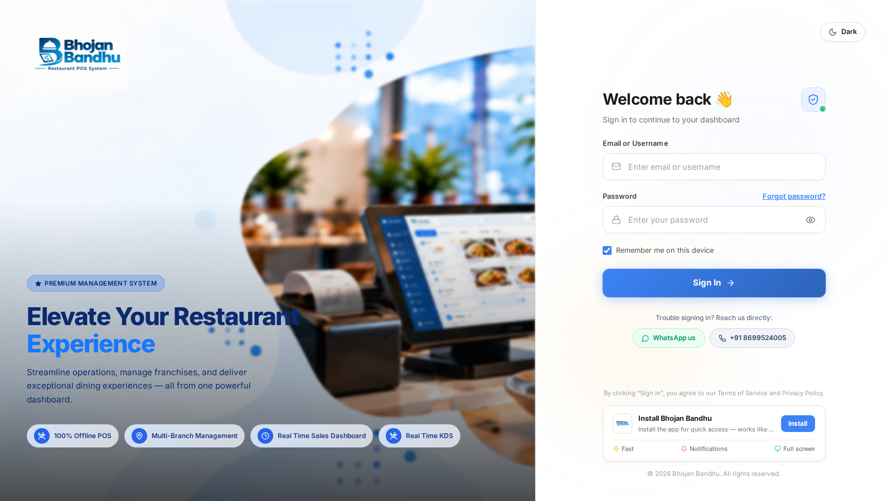
Figure 1 — Login screen
What to note in the screenshot: ① Email or Username field ② Password field (eye icon shows/hides the password) ③ Remember me on this device checkbox ④ Sign In button ⑤ Forgot password? link ⑥ Branded hero panel (left) with feature pills ⑦ Support shortcuts (WhatsApp / phone) at the bottom
💡 Tip: On Chrome/Edge you can install the app to your desktop. Look for the Install banner on the login screen and click Install. It opens like a normal desktop app.
3.2 Logging in
| Field | Required | Description | Example |
|---|---|---|---|
| Email or Username | Yes | Your account’s email address or username. Not case-sensitive. | cashier.main or
manager@restaurant.com |
| Password | Yes | Your password. Use the eye icon to show/hide it while typing. | — |
| Remember me on this device | No | Keeps you signed in on this computer between visits. | ☑ |
Steps:
Step 1: Click the Email or Username field and type your username or email.
Step 2: Click the Password field and type your password.
Step 3: Optional — tick Remember me on this device on a private, trusted computer only.
Step 4: Click Sign In.
Step 5: Your role’s dashboard appears, and the sidebar shows only the sections you are allowed to use.
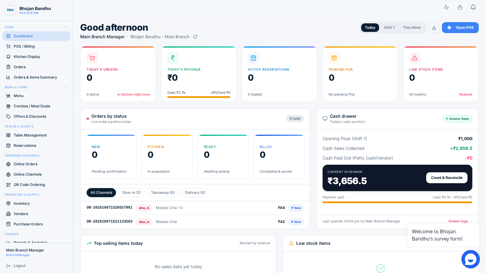
Figure 2 — Dashboard after login (Branch Manager): greeting row, five live stat cards, order pipeline, top-selling items, cash drawer position and quick actions (Open POS, Count & Reconcile, Create Purchase Order).
🚨 Important: Your account is limited by role. If a menu item is missing, you likely do not have permission for it — contact your administrator rather than assuming it is broken.
Wrong password
- After 5 failed attempts within 15 minutes, the account (and the network address) is temporarily blocked and you will see an error telling you to retry after some time. Wait for the cool-down window and try again, or ask your administrator to reset your password (Section 18.1).
Account states
| Situation | What happens |
|---|---|
| Account active | Normal access |
| Account deactivated (INACTIVE) or deleted | Login refused with an access message |
| Franchise suspended | Only the platform Super Admin can log in |
| Franchise inactive | The owner sees the system read-only; branch staff cannot log in |
3.3 Remember me and sessions
- The Remember me checkbox stores your session on that device.
- Sessions expire after 1 day. When it expires you are returned to the login screen — this is normal; simply log in again.
- Logging out from another device or by an administrator ends your session too.
3.4 Forgot password / password recovery
Supported recovery path (recommended):
Step 1: Contact your franchise administrator (branch manager or franchise owner).
Step 2: They open Users, find your account, click Reset Password and give you the new password (Section 18.1).
Step 3: Log in with the new password and keep it secret.
On the login screen, clicking Forgot password? shows the message: “Please contact your franchise administrator to reset your credentials.”
ℹ️ Note: Pages
/forgot-passwordand/reset-passwordalso exist and can be opened by typing the address directly after/, but they are not linked from the login screen and may not be enabled for your deployment. The administrator reset above is the reliable path.
3.5 Logging out
Step 1: Click your name/avatar area at the bottom of the sidebar.
Step 2: Click Logout.
Step 3: You are returned to the login screen. Local cart and session data on that browser are cleared.
🔐 Security: Log out at the end of every shift, especially on shared counter computers. Alternatively, use the app lock (below) which keeps you logged in but locks the screen.
3.6 App lock (lock your screen instantly)
Lock the application without logging out — useful when you step away from the counter.
Step 1: click the lock icon in the top header.
Step 2: The screen is covered by the lock overlay.
Step 3: To continue, type your account password and confirm. After several wrong attempts the unlock is temporarily blocked.
ℹ️ Note: The lock state survives a page refresh. Public pages (login, order tracking) stay reachable while locked. .
3.7 First-time setup checklist
For a new installation, the administrator should complete these in order:
- Log in as the administrator account.
- Confirm franchise/branch details: name, address, phone, GST number (Settings → Franchise & Branch; Branches page).
- Set receipt layout: logo, header, footer, FSSAI, paper size (Receipt Settings).
- Configure tax rules and turn GST on for the branch (Tax & Compliance).
- Create categories and menu items with prices (Menu).
- Set units and inventory items with reorder/critical levels (Inventory).
- Add vendors (Vendors) and create the first purchase order if needed.
- Add tables (Table Management).
- Create users and assign roles (Users) — one per person, never shared.
- Review User Roles permission switches if your operations differ from the defaults.
- Install the Churi Print Service on billing computers and test-print (Section 19).
- Open the cash drawer with an opening balance to start trading (Cash Drawer).
- Run one test order end to end: bill → KOT → kitchen → payment → receipt.
- Take a backup snapshot (Backup & Recovery) once setup is complete.
4. Understanding the Interface
4.1 The login screen
| Element | What it is | What it does |
|---|---|---|
| Hero panel (left) | Branded image panel | Shows the restaurant’s brand, tagline and feature pills |
| Email or Username | Text field | Your identity |
| Password | Password field | Your secret; eye icon toggles visibility |
| Sign In | Primary button | Logs you in |
| Forgot password? | Link | Shows guidance to contact your administrator or sends and email for password reset |
| Remember me | Checkbox | Keeps the session on this device |
| Theme toggle | Moon/sun icon | Switches light/dark mode |
| Install banner | PWA prompt | Installs the app to your desktop (Chromium browsers) |
| WhatsApp / phone links | Support shortcuts | Contact support: +91 8699524005 |
4.2 The sidebar (main navigation)
The dark sidebar on the left is your main navigation.
- Brand block (top): logo/initials, restaurant name and the label POS System.
- Sections: grouped headings (for example CORE, FINANCE, STAFF). Click a heading’s chevron to collapse/expand.
- Menu items: each opens a page. The current page is highlighted.
- Permission filter: items you have no permission for are hidden automatically, and empty sections disappear. Super Admin sees everything.
- User block (bottom): your name, role and Logout.
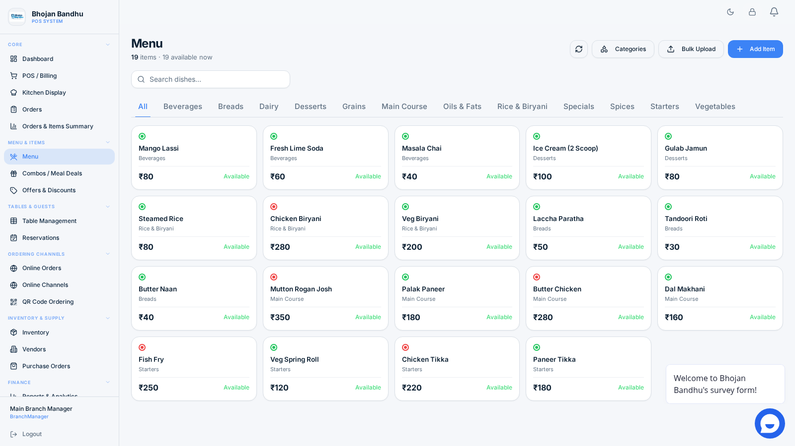
Figure 3 — The sidebar (left) with grouped sections, and a module page (Menu) filling the workspace. Note the highlighted current page and the user block with Logout at the bottom.
What the sidebar contains depends on your role — see the per-role lists in Section 5 and the role guides in Section 30.
💡 Tip: The sidebar label tells you exactly where a
feature lives. This manual always writes navigation as
Sidebar Section → Menu Item,
e.g. FINANCE → Cash Drawer.
4.3 The top header
| Element | What it does |
|---|---|
| Theme toggle | Switch between light and dark appearance |
| Lock button | Instantly locks the app (Section 3.6) |
| Notification bell | Real-time notifications with a red unread counter — stock alerts, order events (Section 21) |
| Ad banner strip | Promotional banners configured by the administrator |
4.4 Common screen elements
| Element | What it is | What it does | When to use it |
|---|---|---|---|
| Stat card | Small tile with a number | Shows a live metric (orders, revenue, low stock) | Glance at the dashboard |
| Table/list | Rows and columns | Lists records; column headers often sort | Find a record |
| Search box | Text field | Filters the list as you type | Find by name/number |
| Filter chips/dropdowns | Date range, branch, status selectors | Narrow the list | When lists are long |
| Reset filters | Clear button | Returns the list to default | When “data is missing” (it is only filtered) |
| Status badge | Colored pill | Shows the state of a record | Scan status quickly |
| Row actions | Icons/buttons per row | View, Edit, Delete, etc. | Act on one record |
| Modal/dialog | Pop-up window | Confirm or complete a task; has Cancel | Any focused task |
| Toast messages | Small pop-ups top-right | Confirm success or explain an error | After every action |
| Tabs | Row of section names | Switch between views of the same page | e.g. Settings tabs |
| Pagination | Page numbers at list bottom | Moves through long lists | When there are many records |
| Drawer | Panel sliding from the right | Shows details without leaving the page | Order details, notifications |
| Primary / danger buttons | Blue/red buttons | Save/create vs. delete/cancel | Follow the color: red = destructive |
Status badges you will see (generic meanings):
| Badge | Meaning |
|---|---|
| Green / Active / Paid | Working normally / completed / fully paid |
| Amber / Pending / Partial | Waiting for action / partially paid |
| Red / Failed / Cancelled / Overdue | Problem or stopped state |
| Grey / Inactive / Draft | Not in use yet / not published |
⚠️ Warning: Red Delete buttons are permanent actions. Deleted records usually land in the Recycle Bin first (Section 18.9) — but some deletions (e.g. Delete Forever in the Recycle Bin) cannot be undone.
4.5 Themes, colors and branding
- Toggle light/dark from the header or login screen.
- The accent color, logos, favicon and login hero content are controlled in Settings (Theme & Colors, Branding, Login Screen tabs) by users with permission.
- Branding is pushed to all terminals automatically — changes appear within seconds without a restart.
Available accent presets: Ocean Blue (default), Churi Crimson, Emerald Green, Royal Purple, Sunset Orange, Vibrant Red, Teal Green, or a custom hex color.
4.6 Keyboard shortcuts
Billing terminal (POS)
| Key | Action |
|---|---|
| F1 | Focus item search |
| F2 | Switch to Dine-in order type |
| F8 | Hold the current bill |
| F10 | Pay & Print |
ℹ️ Note: Shortcuts work only while the POS screen is open and no dialog is asking for text input.
5. User Roles and Permissions
5.1 The seven roles
Every user has exactly one role. The role decides which pages appear in the sidebar and what actions are allowed.
| Role | ID | Purpose | Main responsibilities | Cannot do |
|---|---|---|---|---|
| Super Admin | 1 | Runs the whole platform | Franchises, plans, integrations, platform settings, audit, backups, WhatsApp console | — (full access) |
| Franchise Owner | 2 | Owns one franchise (tenant) and its branches | Menu, offers, branches, subscriptions, reports, tax, backups | Platform-wide settings, other franchises |
| Branch Manager | 3 | Runs a single outlet | POS, kitchen, orders, tables, reservations, inventory, staff, reports, receipts | Franchise/branch administration, permission editing |
| Cashier | 4 | Bills and settles customers | POS, orders, online orders, cash drawer, refunds, tax view, attendance | Menu edits, inventory writes, reports, settings |
| Kitchen Staff | 5 | Prepares orders | Kitchen display, order status, menu view, reservations, attendance | Billing, payments, refunds, inventory writes |
| Inventory Manager | 6 | Controls stock and purchasing | Inventory, vendors, purchase orders, attendance | Billing, reports, settings, menu pricing edits |
| Accountant | 7 | Money and compliance | Reports, expenses, cash drawer view, tax, refunds, settlements, attendance | POS billing, menu, inventory, settings |
ℹ️ Note: Permissions are not hard-coded per role alone — each role has an editable set of permission switches (Section 5.3), so your installation may differ slightly from the defaults below.
5.2 Permission matrix
Based on the default configuration (✅ = available, 👁️ = view only, ❌ = not available):
| Feature | Super Admin | Franchise Owner | Branch Manager | Cashier | Kitchen | Inventory Mgr | Accountant |
|---|---|---|---|---|---|---|---|
| Dashboard | ✅ | ✅ (all branches) | ✅ (own branch) | ✅ (own till) | ✅ (queue) | ✅ (stock) | ✅ (finance) |
| POS / Billing | ✅ | ✅ | ✅ | ✅ | ✅ (no payment) | ❌ | ❌ |
| Orders list | ✅ | ✅ | ✅ | ✅ | ✅ | ❌ | ❌ |
| Kitchen Display | ✅ | ✅ | ✅ | ✅ | ✅ | ❌ | ❌ |
| Menu (view) | ✅ | ✅ | ✅ | ❌ | 👁️ | ❌ | ❌ |
| Menu (create/edit/delete) | ✅ | ✅ | ✅* | ❌ | ❌ | ✅ (create only) | ❌ |
| Combos / Offers | ✅ | ✅ | ✅* | ❌ | ❌ | ❌ | ❌ |
| Tables & Reservations | ✅ | ✅ | ✅ | ❌ | ✅ (manage) | ❌ | ❌ |
| Online Orders / Channels | ✅ | ✅ | ✅ | 👁️ | ❌ | ❌ | 👁️ (settlements) |
| Inventory | ✅ | ✅ | ✅ | ❌ | 👁️ | ✅ | ❌ |
| Vendors / Purchase Orders | ✅ | ✅ | ✅ | ❌ | ❌ | ✅ | ❌ |
| Cash Drawer | ✅ | ✅ | ✅ | ✅ | ❌ | ❌ | ✅ |
| Expenses | ✅ | ✅ | ✅ | ❌ | ❌ | ❌ | ✅ |
| Refunds / Voids | ✅ | ✅ | ✅ | ✅ (request/approve) | ❌ | ❌ | ✅ |
| Tax & Compliance | ✅ | ✅ | 👁️ | 👁️ | ❌ | ❌ | ✅ |
| Reports & Analytics | ✅ | ✅ | ✅ (own branch) | ❌ | ❌ | ❌ | ✅ |
| Staff: Employees | ✅ | ✅ | ✅ | ❌ | ❌ | ❌ | ❌ |
| Attendance (own) | ✅ | ✅ | ✅ | ✅ | ✅ | ✅ | ✅ |
| Users management | ✅ | ✅ | ❌ | ❌ | ❌ | ❌ | ❌ |
| Branches | ✅ | ✅ | ❌ | ❌ | ❌ | ❌ | ❌ |
| Franchises (Tenants) | ✅ | ❌ | ❌ | ❌ | ❌ | ❌ | ❌ |
| Leads, Plans, Integrations, WhatsApp console | ✅ | ❌ | ❌ | ❌ | ❌ | ❌ | ❌ |
| User Roles (permissions) | ✅ | ❌ | ❌ | ❌ | ❌ | ❌ | ❌ |
| Receipt Settings | ✅ | ✅ | ✅ | ❌ | ❌ | ❌ | ❌ |
| Settings | ✅ | ✅ (limited tabs) | ✅ (limited tabs) | ❌ | ❌ | ❌ | ❌ |
| Recycle Bin / Audit Logs | ✅ | ✅ | ❌ | ❌ | ❌ | ❌ | ❌ |
| Backup & Recovery | ✅ | ✅ | ❌ | ❌ | ❌ | ❌ | ❌ |
| Data Export | ✅ | ✅ | ✅ | ❌ | ❌ | ❌ | ✅ |
| Advertisements | ✅ | ✅ | ✅ (own branch) | ❌ | ❌ | ❌ | ❌ |
* Subject to the role’s enabled permission switches.
Why a feature may be missing from your sidebar: the sidebar only renders items whose permission is switched on for your role. If you believe you need a page, ask an administrator to enable it in User Roles.
5.3 Changing what a role can do
Only users with the User Roles permission (Super Admin by default) can do this.
Navigation:
PLATFORM MANAGEMENT → User Roles
Step 1: Open User Roles.
Step 2: Choose the role card (for example Cashier).
Step 3: Toggle permission switches by group (orders, menu, inventory, finance…). Each switch is immediately effective for users of that role on their next page load.
Step 4: Click Save to apply the changed permissions.
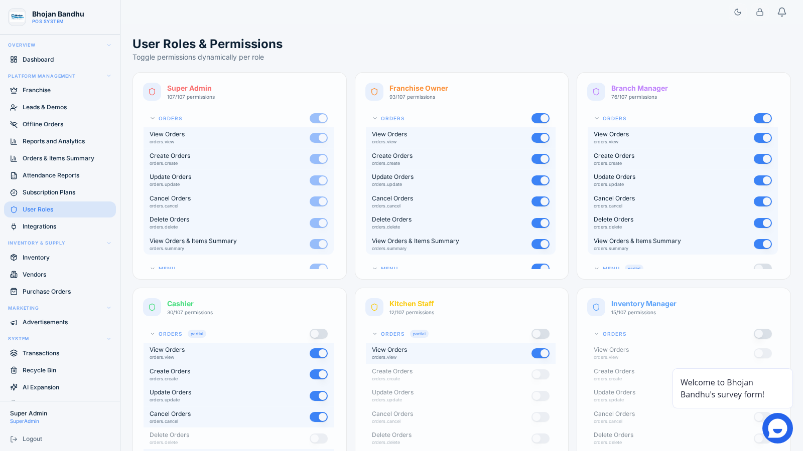
Figure 4 — User Roles: per-role permission cards with switches grouped by feature.
🚨 Important: The Super Admin’s all access switch is locked and cannot be turned off. Be careful when revoking permissions from Branch Manager or Cashier — you may stop a live outlet from billing.
5.4 Read-only and suspended states
| State | Who sees it | Effect |
|---|---|---|
| Franchise Inactive (Read-Only Mode) | Non-Super-Admin users of that franchise | Amber banner at the top; viewing allowed, changes blocked; POS shows BILLING SUSPENDED; kitchen shows OPERATIONS SUSPENDED |
| Franchise Suspended | Everyone except Super Admin | Login refused |
| Franchise Deleted | Everyone | Access refused |
| Read-only user flag | Individual users | Some administrative actions require password re-verification |
6. Dashboards
Navigation: Dashboard (top item in
every sidebar) — or simply log in.
The dashboard you see is chosen automatically from your role. Every dashboard combines stat cards (live numbers), charts, tables and quick-action buttons.
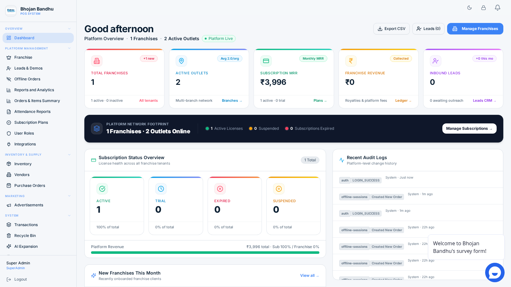
Figure 5 — Super Admin dashboard: franchises, outlets, subscription MRR, franchise revenue and leads.
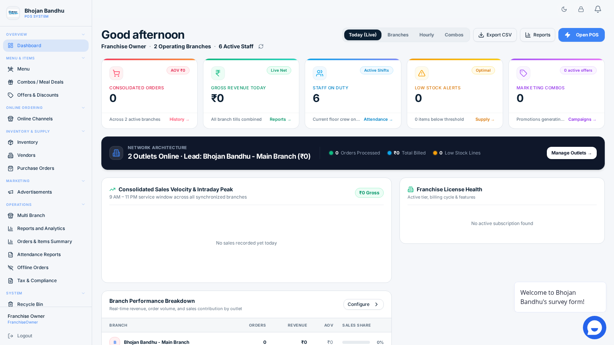
Figure 6 — Franchise Owner dashboard: consolidated orders, gross revenue, staff on duty, low-stock alerts and branch performance.
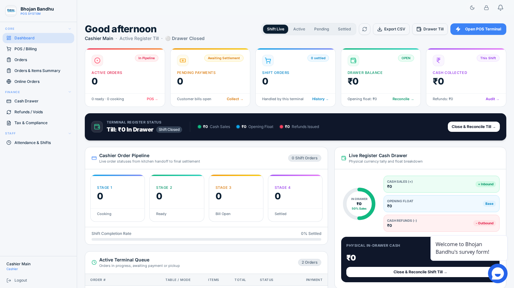
Figure 7 — Cashier dashboard: active orders, pending payments, shift orders, drawer balance and the order pipeline.
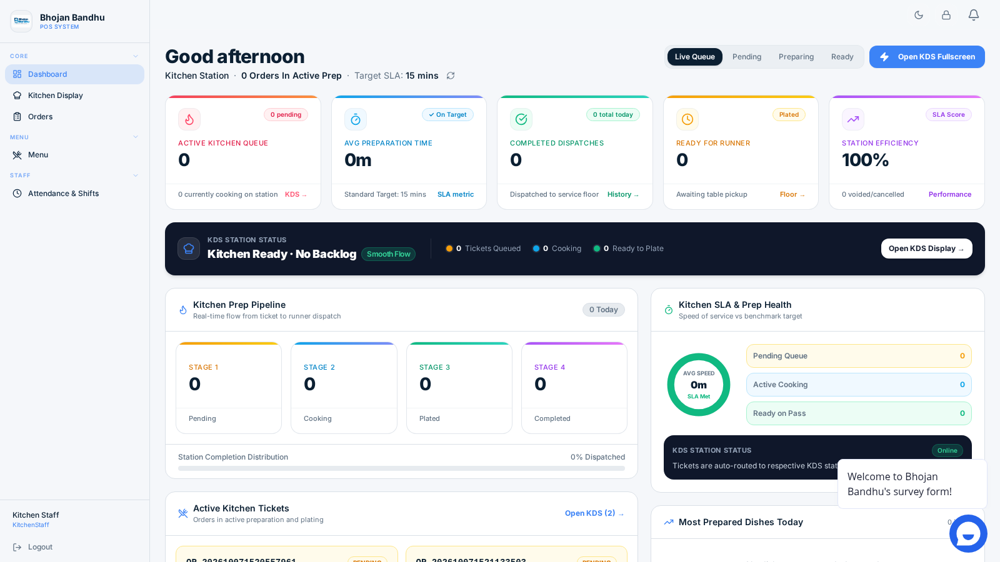
Figure 8 — Kitchen dashboard: active queue, average prep time against the 15-minute SLA, completed dispatches and station efficiency.
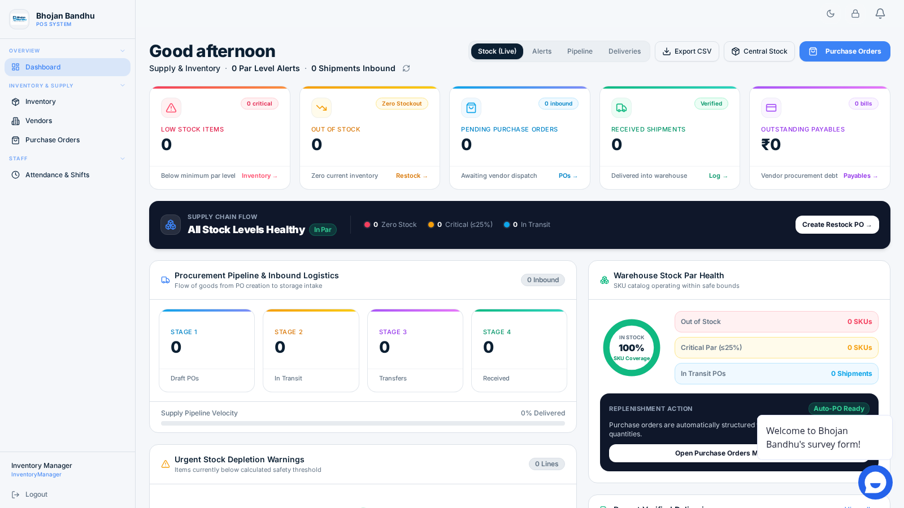
Figure 9 — Inventory dashboard: low stock, out of stock, pending POs, recent deliveries and payables.
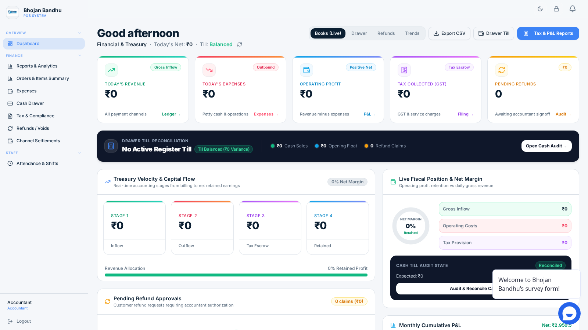
Figure 10 — Accountant dashboard: revenue, expenses, operating profit, GST collected and pending refund approvals.
Super Admin dashboard
| Widget | Shows |
|---|---|
| Total Franchises / Active Outlets | How many tenants and branches exist |
| Subscription MRR | Monthly recurring subscription revenue |
| Franchise Revenue (this month) | Franchise payments received this month |
| Inbound Leads | Demo/lead count |
| Subscription Status Overview | Active / Trial / Expired / Suspended split |
| Platform Revenue, New Franchises | Monthly trends |
| Recent Inbound Leads | Latest leads with status |
| Recent Audit Logs | Latest sensitive actions |
| Top Performing Tenants | Best franchises |
| Buttons | Manage Franchises, Export CSV |
Franchise Owner dashboard
| Widget | Shows |
|---|---|
| Consolidated Orders (with AOV) | Orders across all your branches today |
| Gross Revenue Today | Combined revenue |
| Staff on Duty | Employees present now |
| Low Stock Alerts | Items at/below reorder level across branches |
| Marketing Combos | Active combos |
| Sales velocity chart | Intraday sales curve |
| Branch Performance Breakdown | Orders, revenue, AOV and share per branch |
| Franchise License Health | Subscription status of your franchise |
| Buttons | Export CSV, Reports, Open POS |
Branch Manager dashboard
| Widget | Shows |
|---|---|
| Today’s orders / revenue | Live counters for your branch |
| Active reservations | Bookings not yet seated |
| Pending POs | Purchase orders not yet received |
| Low stock items | Items needing reorder |
| Orders by status | New / Kitchen / Ready / Billed counts |
| Cash drawer card | Opening float, cash sales, paid out, amount in drawer, payment split |
| Top selling items (today) | Best sellers |
| Table status | Available/occupied live view |
| Buttons | Open POS, Count & Reconcile, Create Purchase Order |
Cashier dashboard
Active Orders, Pending Payments, Shift Orders, Drawer Balance, Cash Collected; an Order Pipeline (Cooking → Ready → Bill Open → Settled) with completion rate; Active Terminal Queue; Live Register Cash Drawer (in drawer / cash sales / cash refunds); Terminal Audit & Sync status; Export CSV, Open POS Terminal.
Kitchen dashboard
Active Kitchen Queue, Average Preparation Time (measured against a 15-minute SLA), Completed Dispatches, Ready for Runner, Station Efficiency; Prep Pipeline; Active Tickets; SLA & Prep Health; Most Prepared Dishes; Open KDS Fullscreen.
Inventory dashboard
Low Stock Items, Out of Stock, Pending Purchase Orders, Received Shipments, Outstanding Payables; Procurement Pipeline (Draft / In Transit / Transfers / Received); Urgent Depletion Warnings; Stock Par Health; Recent Verified Deliveries; Export CSV.
Accountant dashboard
Today’s Revenue, Today’s Expenses, Operating Profit, Tax Collected (GST), Pending Refunds; Treasury Velocity & Capital Flow; Pending Refund Approvals with inline Approve/Reject; Live Fiscal Position; Monthly Cumulative P&L (revenue vs expenses, last 7 days); links to till, tax & P&L reports; Export CSV.
ℹ️ Note: Figures on the dashboard reflect live data for your scope (your branch, your franchise, or the whole platform for Super Admin) and the current day unless a widget states otherwise. If a number looks wrong, check the active date/branch filters on the report pages before raising a support ticket.
7. POS / Billing Terminal
7.1 Overview and layout
Navigation: CORE → POS / Billing (or
the Open POS button on the dashboard).
The POS is a full-screen terminal — it opens without the sidebar so nothing distracts from billing.
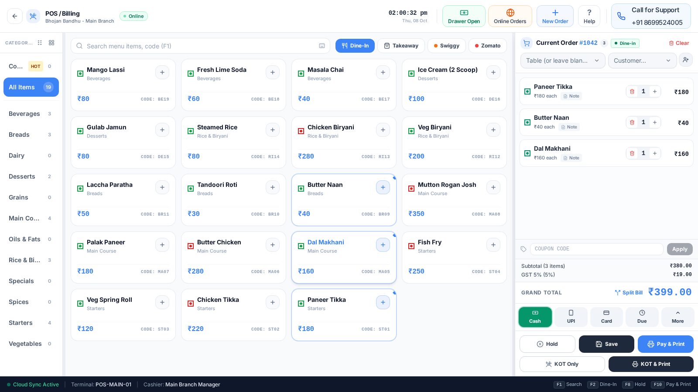
Figure 11 — The POS terminal with three items in the cart.
What to note in the screenshot: ① Order-type bar (Dine-in / Takeaway / Swiggy / Zomato) and online-order counter ② Category tabs and menu tiles (item, price, code) ③ Current Order cart with quantity steppers, per-line prices and notes ④ Totals block: subtotal → tax (GST 5%) → GRAND TOTAL, coupon Apply and Split Bill ⑤ Tenders: Cash / UPI / Card / Due / More ⑥ Action row: Hold · Save · Pay & Print · KOT Only · KOT & Print ⑦ Keyboard hint strip: F1 Search · F2 Dine-In · F8 Hold · F10 Pay & Print
Screen zones (left → right):
| Zone | Contents |
|---|---|
| Top bar | Order type selector (Dine-in / Takeaway / Swiggy / Zomato), branch, live online-order counter, drawer status, support phone, lock/exit |
| Left/centre: menu grid | Category tabs + item tiles (name, price, veg mark, color tag). Combos appear alongside items. Search with F1 |
| Order panel (cart) | Selected items with quantity steppers, line prices, notes, customer, table, discount/coupon, tax toggle, totals |
| Action row (bottom) | Hold, Save, Pay & Print, KOT Only, KOT & Print, Void Cart, Open/Close Drawer, Split Payment |
Who can use it: Super Admin, Franchise Owner, Branch
Manager, Cashier (full billing) and Kitchen Staff (order entry without
payment). Permission key: pos.access.
🚨 Important: If the franchise is inactive the whole terminal shows BILLING SUSPENDED and all actions are disabled (read-only mode).
7.2 Order types
| Order type | When to use | Special behaviour |
|---|---|---|
| Dine-in | Guest eats in the restaurant | Requires a table; table becomes Occupied; released to Cleaning when settled |
| Takeaway | Counter/collection order | No table needed |
| Swiggy | Order arriving from Swiggy | Marked with the platform source |
| Zomato | Order arriving from Zomato | Marked with the platform source |
Orders can also arrive from WhatsApp, Website and QR sources (created from the Online Orders board or guest menu) — these appear in the POS queue automatically.
💡 Tip: Press F2 to jump straight back to Dine-in.
7.3 Creating a dine-in order step by step
Prerequisites: You are logged in with POS permission; the branch is active; the menu has items.
Step 1: Open CORE → POS / Billing.
Step 2: Confirm the order type is Dine-in (top bar, or press F2).
Step 3: Click the table selector and choose the
table (or NO TABLE (COUNTER) for a counter bill).
Step 4: Optional — click the customer field to attach a new or existing customer (name/phone).
Step 5: Browse the menu or press F1 and type to search. Click an item tile to add it to the cart.
Step 6: Adjust quantities with the + / − steppers in the cart. Add an order note if the kitchen needs one (e.g. “less spicy”).
Step 7: Optional — apply a coupon code (Section 7.6) and confirm the discount shown in the totals.
Step 8: Check the totals: subtotal, discount, tax, grand total.
Step 9: Choose how to finish: - KOT Only — sends the ticket to the kitchen without printing a customer bill (order stays unpaid). - KOT & Print — sends the KOT and opens the receipt print flow. - Save — records the order without printing (settle later). - Pay & Print (F10) — open the payment dialog, take payment, print the bill.
Step 10: If you chose Pay & Print, select the payment method (Section 7.8), enter the amount and confirm. The payment is recorded, the bill prints, and the table releases to Cleaning.
Result: the order is created with a server-generated Order Number, appears in the Orders list and (if KOT sent) on the Kitchen Display in real time; cash payments are added to the open cash drawer.
7.4 Choosing a table and customer
Table selector (dine-in):
| Table status | Meaning |
|---|---|
| Available | Free — can be seated |
| Occupied | An open order is running on it |
| Reserved | Booked for a reservation |
| Running KOT | Kitchen is preparing for this table |
| Paid | Bill settled, awaiting cleaning |
| Cleaning | Being reset after a guest |
- Selecting an occupied table resumes/creates an order for it.
- On payment the table is released automatically (Cleaning, then Available). Tables with other open unpaid orders are not released.
Customer field: click to add a new customer (name, phone) or search an existing customer. Customers power order history, loyalty/bulk messaging and delivery details.
7.5 Cart operations and order notes
| Action | How |
|---|---|
| Add item | Click the menu tile (or search via F1) |
| Change quantity | + / − on the cart line |
| Remove a line | Remove control on the cart line |
| Order note | Notes field — visible to the kitchen on the KOT |
| Coupons/discount | Discount field in the totals area |
| Tax display | Tax toggle — shows tax breakdown on the bill |
⚠️ Warning: The discount sent from the POS is not trusted by the server. Coupon codes are re-validated (active, not expired, usage limit not reached, minimum order value met, branch included) and percentage coupons are capped by their maximum discount. If a coupon does not apply, the code is invalid for this order.
7.6 Discounts and coupon codes (Offers)
Navigation:
MENU & ITEMS → Offers & Discounts (Franchise Owner
/ Manager with permission).
Creating an offer:
Step 1: Click New/Offer (create).
Step 2: Fill in:
| Field | Required | Description | Example |
|---|---|---|---|
| Offer code | Yes | The code the cashier types at billing | WELCOME10 |
| Discount type | Yes | Percentage or Fixed amount | Percentage |
| Discount value | Yes | The number | 10 |
| Max discount | No | Cap for percentage offers | 50 |
| Minimum order amount | No | Below this the code is rejected | 300 |
| Apply on | Yes | Order total / specific items / specific category | Order total |
| Usage limit | No | Total redemptions allowed | 100 |
| Start / End date | Yes | Validity window | 01-11-2026 → 30-11-2026 |
| Status | Yes | Active / Inactive | Active |
| Branches | Yes | Which outlets honour the offer | All branches |
Step 3: Save. The offer is live immediately.
At the POS: type the code in the discount field → the server returns the validated discount amount → it appears in the totals. Each successful order increments the offer’s usage counter inside the order transaction (no double-spend).
7.7 Taxes on the bill
- Tax is calculated by the server from the tax rules
configured under
Tax & Compliance, never typed by the cashier. - Rules are resolved branch-first, then franchise-level. A branch-specific rule with the same name overrides the franchise rule.
- Rule fields: tax type (GST/VAT/Service/Custom), rate, apply-on (all items / category / item), inclusive or exclusive of price, active flag.
- If a branch has GST disabled, no GST component is applied to its orders.
- The bill stores a tax breakdown (per component/rate) which prints on the receipt (CGST/SGST split).
Default on a fresh installation: one tenant-level rule — GST 5% on all items, exclusive of price.
ℹ️ Note: Cashiers can view tax (permission
tax.view) but only administrators can change tax rules (tax.manage).
7.8 Payments: single payment, split payment, due
Payment methods on the terminal: Cash, UPI, Card, Due (primary row), plus Wallet, Cheque/Bank, Other, Swiggy Pay, Zomato Pay (extended tender options). Backend-recognised methods: Cash, Bank Transfer, UPI, Card, Razorpay, Other.
Single payment:
Step 1: Click Pay & Print (F10).
Step 2: Select the payment method.
Step 3: Enter the amount (defaults to the grand total).
Step 4: Confirm. The payment is recorded, the receipt prints.
Split payment (one bill settled by several methods):
Step 1: Click Split Payment.
Step 2: Enter the amount for each tender you want (e.g. ₹500 Cash + remainder UPI).
Step 3: Confirm — payments are recorded per method and the total must equal the bill.
Resulting payment status:
| Status | Meaning |
|---|---|
| PAID | Full amount received |
| PARTIAL | Part of the bill received (balance due) |
| PENDING | Nothing received yet |
| FAILED | Payment attempt failed |
| REFUNDED | Payment returned (fully or partly) |
Due: choosing Due leaves the bill PENDING/PARTIAL — used for tab/accounts customers. The Accountant’s dashboard shows Pending Payments for these.
Edit rule: once money is captured, the amount counts as credit toward any later edit of that order. You cannot reduce an order total below the amount already paid — cancel and refund instead (Section 8.4 / 15.3).
⚠️ Warning: Cash payments automatically increase the open cash drawer’s cash sales and expected balance. Always keep exactly one drawer open per shift.
7.9 Saving, holding and printing: Save, Hold, Pay & Print, KOT Only, KOT & Print
| Button | Shortcut | What it does | When to use it |
|---|---|---|---|
| Hold | F8 | Parks the current cart on this device (local held bills) | Guest waiting on one item; serve another table first |
| Save | — | Creates the order without printing | Order in the kitchen now, payment later |
| Pay & Print | F10 | Opens payment; after payment prints the customer bill | Settling a table |
| KOT Only | — | Sends the kitchen ticket only, no bill | Start cooking before payment |
| KOT & Print | — | Sends KOT and prints the bill/KOT flow together | Standard dine-in flow |
| Void Cart | — | Discards the current cart with a reason (Section 7.11) | Wrong table/items, guest leaves |
Direct print: the KOT preview offers a direct print action which sends the job straight to the configured printer (Section 19).
🚨 Important: KOT Only / KOT & Print / Save create the order unpaid. Always follow through with Pay & Print (or let the accountant settle it) — otherwise it shows up as a pending payment.
7.10 Hold and resume bills
Step 1: Click Hold (F8) with items in the cart. A
toast confirms: Bill held (#…). The cart is stored
on that device (browser storage).
Step 2: Later, open the held bills / resume dialog (the resume control on the POS) to see parked bills.
Step 3: Click Resume to reload the cart exactly as it was, or delete a held bill you no longer need.
⚠️ Warning: Held bills are stored locally in that browser. They do not follow you to another terminal. Settle or note them before clearing browser data or switching computers.
7.11 Voiding a cart
Step 1: Click Void Cart.
Step 2: Enter a reason in the Void Cart dialog.
Step 3: Confirm.
Result: the cart is discarded and a void record (with the cart snapshot) is stored. Voids are visible to managers under Refunds / Voids (Section 15.3).
7.12 Cash drawer open / close
Navigation: FINANCE → Cash Drawer (or
the Open Drawer / Close Drawer buttons in the POS).
Open:
Step 1: Click Open Drawer (POS) or Open on the Cash Drawer page.
Step 2: Enter the opening balance (the float you start with).
Step 3: Confirm. The drawer session starts; cash sales are tracked against it.
Close and reconcile:
Step 1: Click Close Drawer (POS) or Close on the Cash Drawer page.
Step 2: Enter the actual counted cash.
Step 3: The system shows expected balance and the variance (difference).
Step 4: Confirm. The session is stored with opening/closing figures and any variance.
| Field | Meaning |
|---|---|
| Opening balance | Cash in the drawer at shift start |
| Cash sales | Cash received during the session |
| Cash refunds | Cash paid out as refunds |
| Cash expenses | Cash expenses booked from the drawer |
| Expected balance | Computed: opening + sales − refunds − expenses |
| Actual balance | What you physically counted |
| Variance | Actual − expected (positive = extra, negative = short) |
💡 Tip: Count the drawer at every shift change. A recurring negative variance is an early warning of billing errors.
7.13 Receiving online orders in the POS
- Orders from Swiggy/Zomato/WhatsApp/Website/QR arrive in real time (sound + toast + red counter on the POS top bar).
- In-flight delivery orders are counted live at the top of the terminal.
- Accept/reject and status changes are done from the POS queue, the Online Orders board (Section 13.1), or the Kitchen Display.
- Manual entries for delivery platforms can be created from the Online Orders board (New Online Order).
7.14 Offline billing
If the internet drops:
- The terminal keeps working — menu and cached data come from local storage.
- New orders are queued on that device with a unique offline ID.
- When connectivity returns, queued orders sync automatically; duplicates are impossible because each offline order has a unique ID (a re-send returns the existing order instead of creating a second one).
- Track the queue at
PLATFORM/OFFLINE → Offline Orders(Offline Reconciliation, Section 18.13).
⚠️ Warning: Do not clear browser data/IndexedDB while offline orders are pending — you would lose the queue.
7.15 POS edge cases
| Situation | What happens |
|---|---|
| Page refreshed mid-cart | The active cart and order meta are restored from local storage |
| Browser closed during a held bill | Held bills persist on that device; re-open POS and resume |
| Internet disconnects mid-payment | The order may be queued; verify in Orders/Offline Orders before retrying to avoid double charging |
| Same “Pay & Print” clicked twice | Orders use server-side idempotency for offline IDs; still, wait for the toast before clicking again |
| Session expires while billing | You are returned to the login screen; log in again and check the order state in Orders before re-billing |
| Coupon rejected | Code invalid/expired/usage exhausted/below minimum — bill without it or ask the owner |
| Required table missing (dine-in) | Select a table first; the server validates table/branch/customer before creating the order |
| Franchise inactive | BILLING SUSPENDED — read-only until the owner renews/reactivates |
| Stock hits zero for an item | The item is flagged; marketplaces may be auto-updated to unavailable (“86”) |
8. Orders
8.1 Orders list
Navigation: CORE → Orders
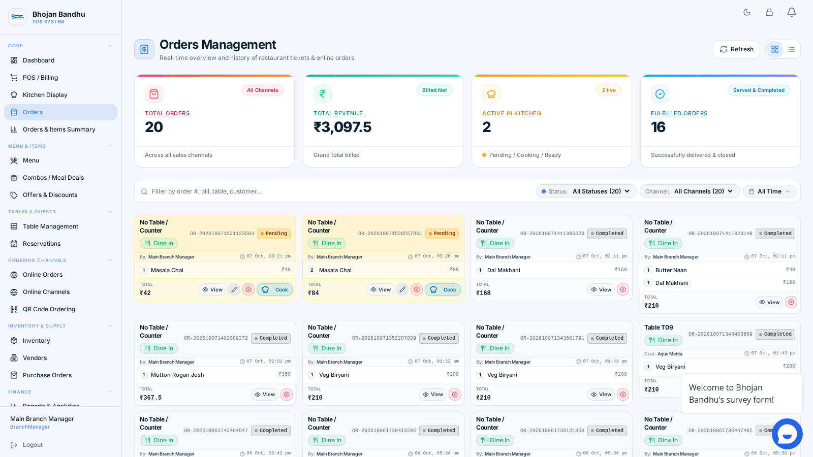
Figure 12 — Orders list with status/channel filters, grid/list views and per-row actions.
- Filters: order status, channel/source (Dine-in, Takeaway, Swiggy, Zomato, WhatsApp, Website, QR), branch, date range, search by order number.
- Views: grid and list views.
- Columns: order number, type/source badge, table/customer, items count, total, payment status, status badge, biller, time.
- Row actions: View, Accept, Reject, Cook, Ready, Serve, Done (availability depends on current status and your permissions).
- Detail drawer/dialog: full item list, quantities, prices, tax/discount, payment status, notes, actions such as Mark Completed.
8.2 Order statuses
| Status | Meaning | Who moves it |
|---|---|---|
| PENDING | Received, not yet started | System (on creation / channel intake) |
| PREPARING | In the kitchen | Kitchen staff (Start cooking) |
| READY | Cooked, awaiting pickup/serve | Kitchen staff |
| SERVED | Delivered to the table/guest | Floor staff |
| COMPLETED | Finished and settled | POS/manager |
| CANCELLED | Stopped before completion | Anyone with orders.cancel |
| DELETED | Removed record | Users with orders.delete |
Payment status (independent of the above):
PENDING → PARTIAL → PAID, plus FAILED,
REFUNDED.
Automatic behaviour:
- Moving to PREPARING / READY / SERVED deducts recipe stock once (the order is flagged so stock cannot be deducted twice), expands combos, and reconciles low-stock alerts (a notification/email may be raised).
- COMPLETED / CANCELLED releases the table to Cleaning/Available if no other open unpaid dine-in orders remain.
- Status changes are pushed in real time to the kitchen display and dashboards.
8.3 Order actions
| Action | Permission | Effect |
|---|---|---|
| Accept | online order permissions | Incoming channel order accepted → PENDING |
| Reject | channel permissions | Order rejected with a reason code |
| Cook (Start cooking) | kitchen.update |
→ PREPARING, stock deducted |
| Ready | kitchen.update |
→ READY |
| Serve | kitchen.update |
→ SERVED |
| Done / Mark Completed | orders.update |
→ COMPLETED, table released |
| Edit order | orders.update |
Items/qty changed; paid amount acts as credit |
| Cancel | orders.cancel |
Cancels; auto-refund if money was captured (Section 8.4) |
| View receipt | pos.access |
Opens the printable receipt |
| Recipe (stock view) | kitchen.update |
Shows ingredient deduction for the ticket |
8.4 Cancelling an order
Prerequisites: permission
orders.cancel; the order is not already
cancelled/deleted.
Step 1: Open the order (Orders list → View).
Step 2: Click Cancel and enter a cancellation reason.
Step 3: Confirm.
System behaviour:
- If the order was fully paid, a refund record is created automatically (FULL) before the cancellation is applied.
- If it was partially paid, a PARTIAL refund record is created.
- The order becomes CANCELLED with reason and timestamp; tables are released.
Failure conditions: cancelling an already cancelled/deleted order is refused.
🚨 Important: The automatic refund starts in REQUESTED status — it still needs approval in Refunds / Voids (Section 15.3) unless your process approves it immediately.
8.5 Orders & Items Summary
Navigation: Orders & Items Summary
(sidebar)
A four-tab analytical view: Orders Summary, Items Summary, Orders Detail, Branch Summary.
- Filters: range or month, branch.
- Metrics: payment-mode breakdown, order totals, per-item quantities.
- Export: Download Excel.
Use it for daily/periodic reconciliation rather than live monitoring (use Reports & Analytics for trends).
9. Kitchen Display (KDS)
Navigation: CORE → Kitchen Display (or
Open KDS Fullscreen on the dashboard).
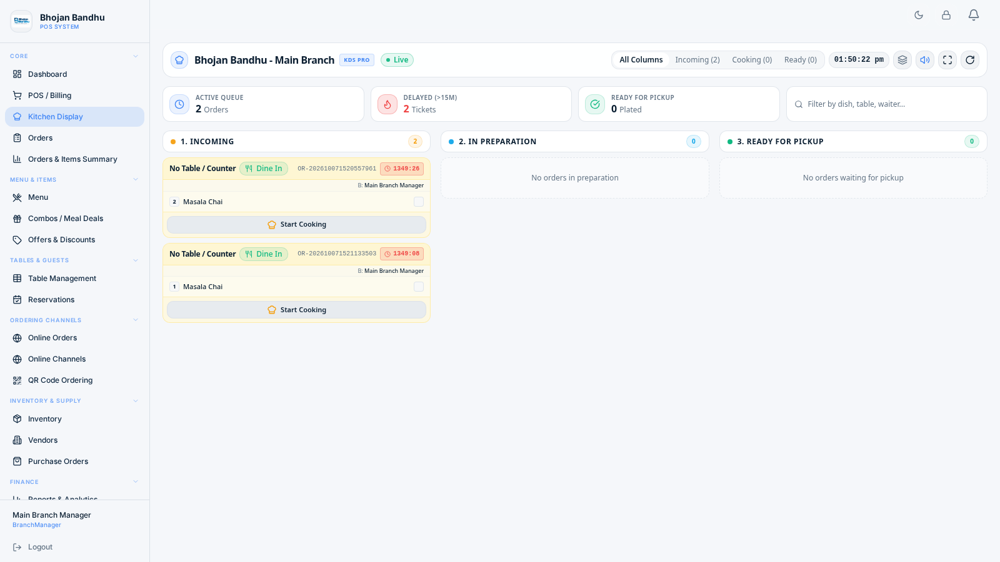
Figure 13 — Kitchen Display: tickets move left to right from Active Queue → preparing → Ready for Pickup.
Purpose
The kitchen’s single screen: every live order as a ticket, moving left to right as it is prepared.
Who can access it
Kitchen Staff, Branch Manager, Cashier, Super Admin, Franchise Owner
(permission kitchen.view).
The columns
| Column | Meaning | Typical action |
|---|---|---|
| Active Queue | New, unaccepted tickets | Accept (or reject) |
| Orders / Tickets | Being prepared | Start cooking / mark ready |
| Ready for Pickup | Cooked, waiting for the runner | Mark ready / Ready & serve |
Steps — kitchen flow
Step 1: An order arrives (POS KOT Only / KOT & Print, or an online order). A chime sounds and the ticket appears.
Step 2: Click Accept on the ticket (accepted within ~20 minutes window).
Step 3: Click Start cooking. If the item has a recipe, a stock-deduction modal shows the ingredients and quantities that will be deducted — confirm to deduct stock from inventory.
Step 4: Click Mark Ready when cooked. The ticket moves to Ready for Pickup.
Step 5: Use Ready & serve to hand off to the floor (order → SERVED).
Filters and alerts
- Dish filters to focus on one item/station.
- Audio chime on new tickets (test your volume before service).
- SLA panel on the dashboard shows average prep time against a 15-minute target.
Who can access it — limitations
- Kitchen actions are blocked when the franchise is inactive (OPERATIONS SUSPENDED).
- Rejection is a real action (with reason) — it returns the order to the floor for handling.
10. Menu Management
10.1 Menu items
Navigation: MENU & ITEMS → Menu

Figure 14 — Menu page: item grid with search/category filter and Add Item / Bulk Upload / Transfer actions.
Who can access: Super Admin, Franchise Owner, Branch Manager (create/edit/delete), Kitchen Staff (view only), Inventory Manager (create only), Cashier (no access).
Available actions: Add item, Edit, Delete, search, category filter, Bulk Upload, Transfer Menu, toggle availability.
Steps — add an item:
Step 1: Open MENU & ITEMS → Menu.
Step 2: Click Add Item.
Step 3: Fill the form (table below).
Step 4: Optionally add recipe ingredients (inventory item + quantity + unit) so stock is deducted when the dish is cooked.
Step 5: Click Save. The item appears on the POS grid immediately.
Field reference:
| Field | Required | Description | Example |
|---|---|---|---|
| Name | Yes | Dish name shown to cashiers | Paneer Tikka |
| Category | Yes | Grouping used for tabs/filters | Starters |
| Price | Yes | Selling price (before tax) | 240 |
| GST % (get percentage) | No | Tax percentage associated with the item | 5 |
| Prep time | No | Estimated preparation minutes | 15 |
| Vegetarian | No | Veg mark on the tile | ☑ |
| Available | No | Unavailable items cannot be ordered | ☑ |
| Color tag | No | Visual tile color | Red |
| Status | Yes | Active / Inactive / Deleted | Active |
| Recipe ingredients | No | Inventory items + qty + unit deducted on cooking | 150 g paneer |
Branch scoping: items can belong to the franchise (shared) or to a single branch. Branch users cannot edit/delete franchise-shared items.
10.2 Categories
Navigation: Menu → Categories editor
(same page; permission menu.create/update/delete).
- Categories are typed MENU or INVENTORY (menu tabs vs stock groupings).
- Create/edit/delete with name and scope (franchise or branch).
10.3 Bulk upload
Navigation: Menu → Bulk Upload
Step 1: Download the template file.
Step 2: Fill the template with your items (one row per item).
Step 3: Upload the file and follow the import steps shown.
Step 4: Review the result; items appear in the grid.
⚠️ Warning: Always use the downloaded template — column mismatches cause import failures. Back up (or export) before a large bulk change.
10.4 Menu transfer between branches
Purpose: push a branch’s menu to sibling branches inside the franchise.
Navigation: Menu → Transfer Menu
(permission menu.transfer).
Step 1: Open Transfer Menu.
Step 2: Choose source branch and target branch(es).
Step 3: Preview the transfer, then confirm. Items are copied/updated at the target.
Also available from the Branches page (Transfer Menu).
10.5 Combos / Meal Deals
Navigation:
MENU & ITEMS → Combos / Meal Deals (Franchise Owner /
Super Admin; Manager per permissions).
| Field | Description |
|---|---|
| Name | e.g. “Family Feast” |
| Description | Marketing text |
| Items | Constituent menu items (with quantities) |
| Branches/outlets | Where the combo is sold |
Create / edit / delete. Combos bill as a single line but expand into their items for recipe stock deduction.
10.6 Offers & Discounts
See Section 7.6 (creation fields) — managed from
MENU & ITEMS → Offers & Discounts.
11. Tables and Reservations
Table Management
Navigation:
TABLES & GUESTS → Table Management (permission
tables.view / tables.manage).
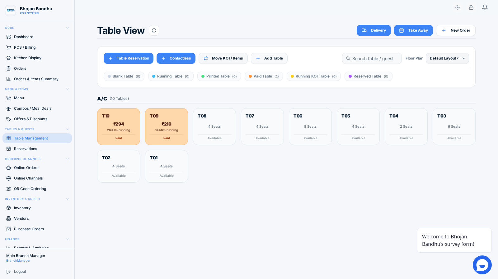
Figure 15 — Table Management: floor view with live table statuses and per-table actions.
What you see: a floor view of tables with live status badges (Available, Occupied, Reserved, Running KOT, Paid, Cleaning).
Actions:
| Action | What it does |
|---|---|
| Add / Edit / Delete table | Table number, capacity, label (next number suggested automatically) |
| New Order | Starts a dine-in bill on that table |
| Table Reservation | Books the table (opens Reservations) |
| Move KOT / Transfer Table | Moves an open ticket to another table |
| Contactless QR | Generates the table’s QR code for guest self-ordering |
| Start New Dine-in Order | Fresh order on an occupied-but-settled table |
| View Settled Bill | Reopens a completed bill/receipt |
Reservations
Navigation:
TABLES & GUESTS → Reservations (permission
reservations.manage).
Steps — create a reservation:
Step 1: Click New Reservation.
Step 2: Enter guest name/phone, date, time, party size, table, notes.
Step 3: Save. Status = PENDING (or CONFIRMED).
Step 4: On arrival click Seat Guest → status COMPLETED; the table becomes occupied.
Statuses: PENDING → CONFIRMED → COMPLETED; CANCELLED at any point before completion.
Filters: date, branch, table-view toggle.
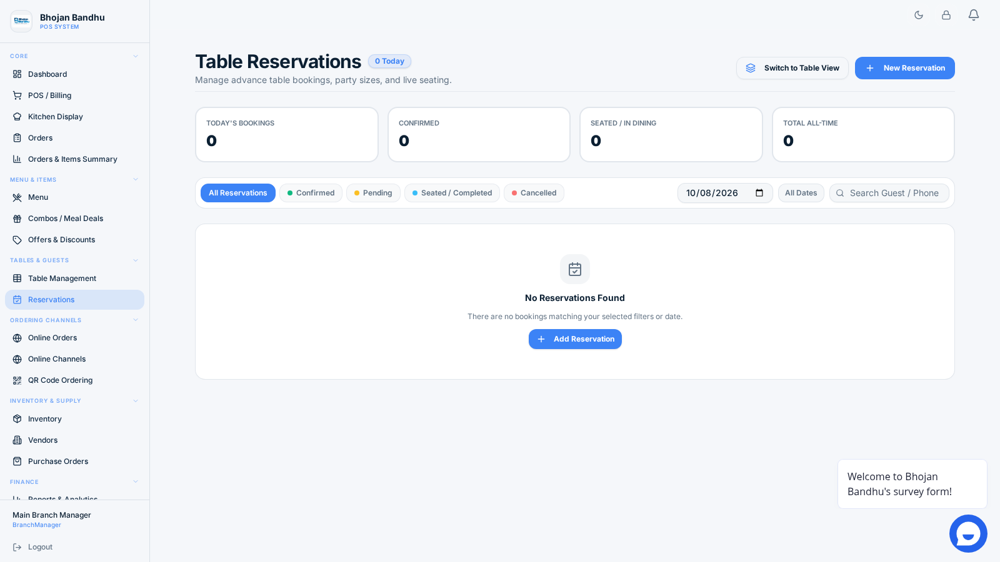
Figure 16 — Reservations: date/branch filters, booking list and Seat Guest actions.
12. Customers
Navigation: Customer (Branch Manager
sidebar) or the customer field inside the POS.
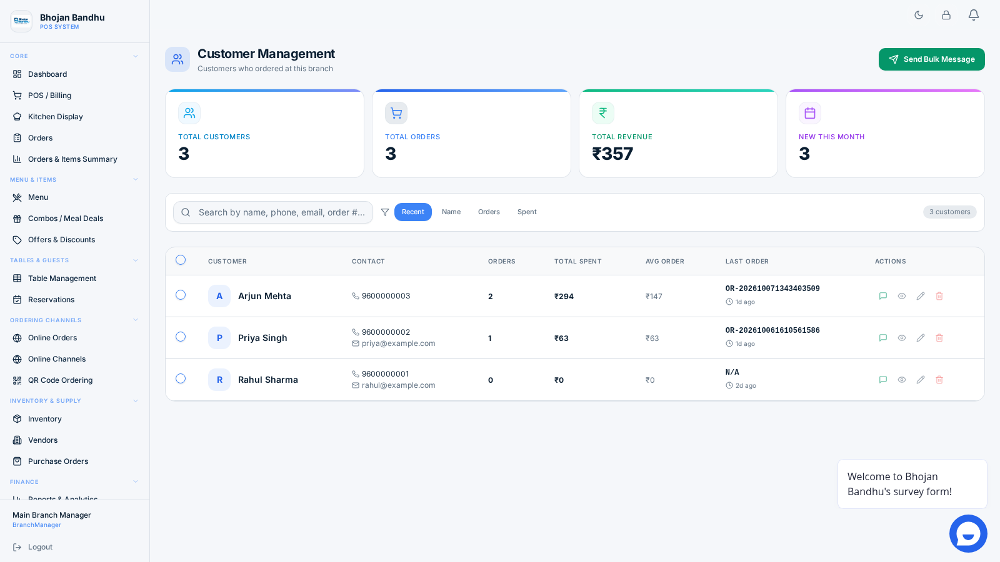
Figure 17 — Customer management list with search, stats and bulk actions.
Actions: Add, Edit, Delete, search, bulk-select, Bulk Message (WhatsApp), open Customer Details drawer with order history.
Field reference:
| Field | Required | Description | Example |
|---|---|---|---|
| Name | Yes | Customer name | Aarti Verma |
| Phone | Yes (recommended) | Mobile number — used for WhatsApp messaging and delivery | 98XXXXXXXX |
| No | Email address | aarti@example.com | |
| Address/delivery | No | Delivery address for delivery orders | Flat 4B, MG Road |
Why keep customers: faster billing (search by phone), order history, bulk promotional messaging, delivery details.
🔐 Security: Customer phone numbers are personal data — use Bulk Message responsibly and only for legitimate order/promotion updates.
13. Online Ordering and Channels
13.1 Online Orders board
Navigation:
ORDERING CHANNELS → Online Orders
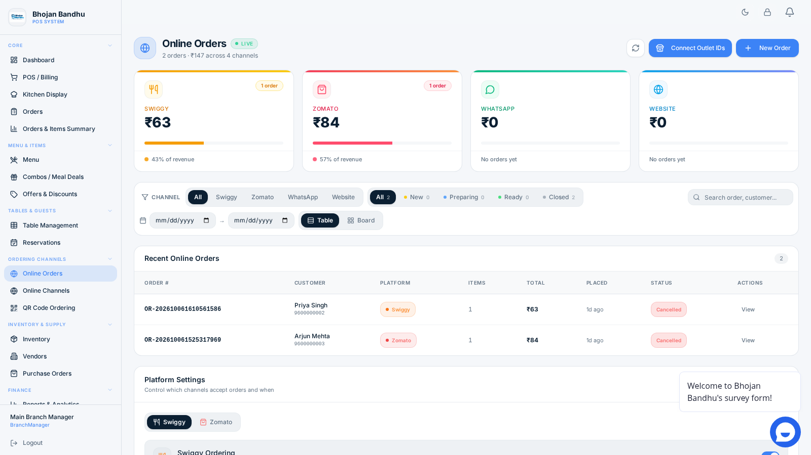
Figure 18 — Online Orders board: incoming delivery orders with Accept / Reject / status actions and channel filters.
- Live board of incoming delivery orders with Accept / Reject / Mark Ready / Complete.
- Board and table views; recent online orders list.
- New Online Order — manual entry (customer, type, items) for phone/WhatsApp orders.
- Outlet mapping modal — maps the platform’s store ID to your branch (permission-dependent).
- Filters by channel (Swiggy, Zomato, WhatsApp, Website, QR).
13.2 Online Channels (Swiggy, Zomato, Website, WhatsApp)
Navigation: Online Channels (Franchise
Owner / Branch Manager / Accountant view for settlements; credentials
are Super Admin only).
Tabs: Menu Mapping, Settlements, Monitor, Webhook Logs.
| Concept | Meaning |
|---|---|
| Provider | Platform: Swiggy, Zomato, Website, QR Ordering, WhatsApp |
| Account | Your credentials connection (Connected / Disconnected) |
| Branch mapping | Links a platform store to an internal branch (external store ID) |
| Menu mapping | Maps platform item IDs to your menu items; sync pushes availability |
| Settlement | Platform payouts — record, edit, reconcile against orders |
| Outlet control | Take outlet online, pause, resume (or pause all) |
| Monitor | Health of the integration, recent order flow |
| Webhook logs | Incoming platform callbacks (Super Admin) |
Typical setup (Super Admin):
Step 1: Open Integrations or
Online Channels and connect the provider
account with credentials (API key/client ID). Credentials are encrypted
at rest — never paste them into tickets or chats.
Step 2: Map each branch to its platform store ID.
Step 3: Sync the menu and resolve unmapped items.
Step 4: Use Test to verify the connection.
Step 5: Turn the outlet online. Incoming orders now appear on the Online Orders board.
Order statuses for channels: RECEIVED → MAPPED → CREATED → ACCEPTED → PREPARING → READY → COMPLETED (or CANCELLED/FAILED).
Failure handling: permanently failed incoming orders raise a notification (INTEGRATION ORDER FAILED) so staff can re-enter them manually.
13.3 QR Code Ordering
Navigation:
ORDERING CHANNELS → QR Code Ordering
- Lists QR-placed orders.
- Generate/download table QR codes (PNG/PDF) for table tents.
- Scanning opens the guest menu
(
/guest-menu) for that table — guests order on their own phone; the order lands in the POS/board.
13.4 Public order tracking
Address:
/<your-domain>/track/<order number> — the link
is printed on the receipt as a QR code (if enabled in Receipt
Settings).
- Shows a status timeline for that order.
- Auto-refreshes every 15 seconds.
- No login required.
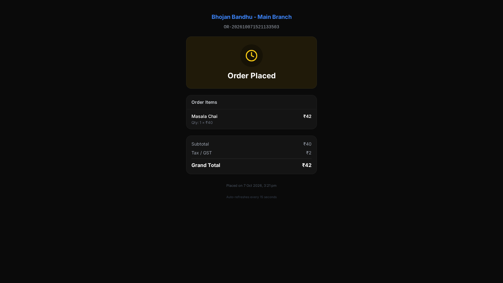
Figure 19 — Public order tracking: status timeline, itemised bill and auto-refresh.
13.5 Guest menu (QR self-ordering)
Address:
/<your-domain>/guest-menu (optionally with a table
number).
- Guest picks items, adds a name/notes, chooses Pay online (Razorpay) or Pay at counter.
- Online payment creates a server-verified payment; the order occupies the table.
- Branding and receipt settings come from the branch configuration.
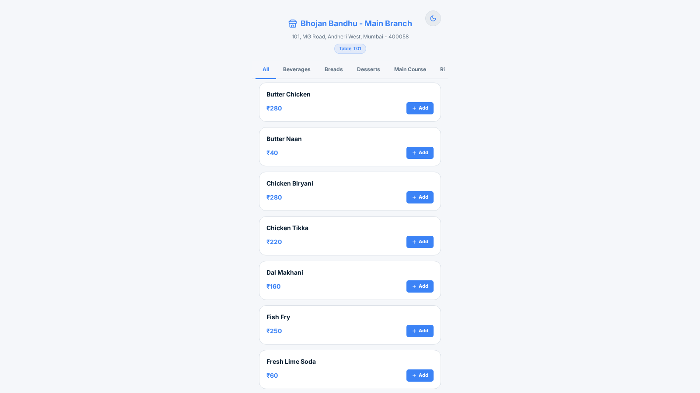
Figure 20 — Guest menu for table T01: category tabs, item cards with Add buttons and running cart.
14. Inventory and Supply Chain
14.1 Inventory items
Navigation:
INVENTORY & SUPPLY → Inventory (permission
inventory.view / inventory.create /
inventory.update / inventory.delete).
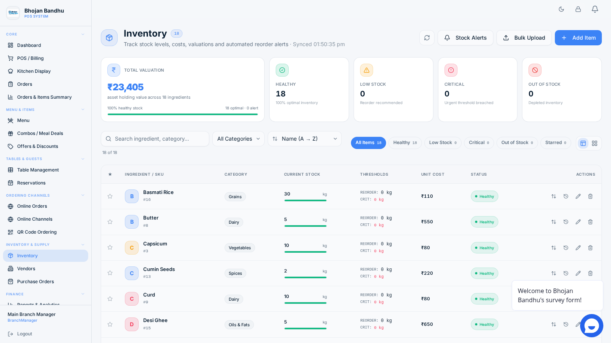
Figure 21 — Inventory list with stock levels, thresholds, valuation and the stock-alerts drawer.
What you see: stock list with valuation, available quantity vs thresholds, condition and status badges, an active stock alerts drawer and a Reorder action.
Actions: Add Item, Bulk upload (xlsx/csv), Adjust stock, History (movements), Reorder, search/filter, stock alerts (with sound test).
Field reference:
| Field | Required | Description | Example |
|---|---|---|---|
| SKU | Yes | Unique stock code | PAN-001 |
| Barcode | No | Scannable code | 8901234567890 |
| Name/description | Yes | Ingredient/product | Paneer |
| Unit | Yes | kg, g, L, ml, pcs, dz, pk, btl, box, bag | kg |
| Purchase quantity | No | Standard pack size purchased | 1 |
| Available quantity | Yes | Current stock on hand | 12.5 |
| Minimum level | No | Warning threshold | 5 |
| Reorder level | No | Triggers low stock alert | 5 |
| Critical level | No | Triggers critical alert | 2 |
| Cost per unit | No | Purchase cost | 320 |
| Condition | Yes | Good / Damaged / Defective / Quarantine | Good |
| Lifecycle | Yes | Active / Pending / Blocked / Obsolete | Active |
| Branch | Yes | Which outlet owns the stock | FA-MAIN |
Business rules:
- Every change writes a stock movement with the before/after quantity and a reason.
- Movement types:
ADJUSTMENT,RESTOCK,CONSUMED,WASTE,TRANSFER_OUT,TRANSFER_IN. - When an order moves to PREPARING/READY/SERVED, recipe ingredients
are deducted (
CONSUMED) — once per order. - Receiving a purchase order increases stock
(
RESTOCK).
14.2 Stock adjustment and stock adjustments page
Navigation: list of adjustments + New Stock Adjustment (type, unit, quantity, reason) → Save.
ℹ️ Note: This page is reachable by URL (
/stock-adjustment) and is not shown in the sidebar by default. Prefer the Adjust stock action inside the Inventory page.
14.3 Stock alerts
- Evaluated automatically (scheduled job; also reconciled after each order deducts stock).
- Thresholds: reorder level →
low, critical level →critical, zero →out_of_stock. - Raises an in-app notification (bell) with item name, quantity, level and unit, and emails configured recipients.
- Inventory dashboard shows Low Stock and Out of Stock counts; marketplaces can be auto-updated to unavailable when an item hits zero.
14.4 Vendors
Navigation:
INVENTORY & SUPPLY → Vendors (permission
vendors.view/create/update/delete).
Actions: Add/Edit vendor, view outstanding balance, payment terms, Pay vendor (bank/UPI/cash/cheque, IFSC details), reminder days, auto receipt, payment receipt history.
Field reference: name, contact person, phone, email, address, payment terms, bank/UPI details.
14.5 Purchase orders
Navigation:
INVENTORY & SUPPLY → Purchase Orders (permission
purchase_orders.view/create/update/delete).
Steps — create and receive a PO:
Step 1: Click New PO.
Step 2: Choose the vendor, add items (quantity, rate, tax), set the expected date. Save as Draft if not ready.
Step 3: Send it (status SENT → PENDING).
Step 4: On delivery click Receive and enter the
received quantity per line. Stock is restocked
(RESTOCK movement).
Step 5: Click Record Payment to pay the vendor (full or partial).
Statuses:
| Order status | Meaning |
|---|---|
| DRAFT | Not sent yet |
| SENT | Sent to vendor, awaiting response |
| PENDING | Awaiting delivery |
| PARTIALLY_RECEIVED | Some lines received |
| DELIVERED | Fully received |
| CANCELLED | Stopped |
| Payment status | Meaning |
|---|---|
| UNPAID / PARTIALLY_PAID / PAID / OVERDUE | Vendor settlement state |
ITC fields (GST): each line records CGST/SGST/IGST/Cess and whether it is ITC-eligible; the PO summary shows eligible/ineligible Input Tax Credit and net liability for the Accountant’s Tax dashboard.
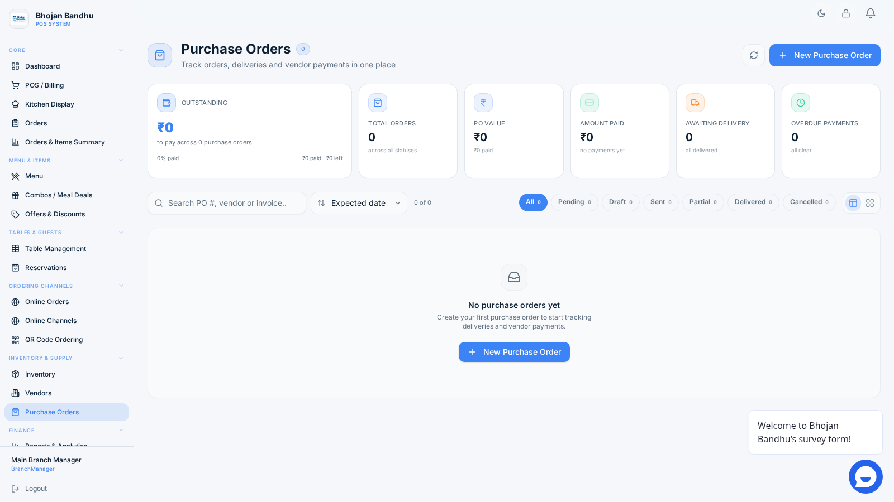
Figure 22 — Purchase orders: status and payment badges, receive/payment actions and ITC summary.
14.6 Stock transfers between branches
Navigation: Inventory transfers are managed from the
admin branch-transfer controls (permission
branches.transfer / inventory.update).
Lifecycle:
REQUESTED → APPROVED → IN_TRANSIT → COMPLETED (or
REJECTED/CANCELLED). Item-level states: PENDING → IN_TRANSIT → RECEIVED
(or MISSING).
- Source branch ships (stock moves out) and destination receives (stock moves in).
- Movements are recorded as
TRANSFER_OUT/TRANSFER_IN.
15. Finance
15.1 Cash Drawer
Navigation: FINANCE → Cash Drawer —
full procedure in Section 7.12.
Additional features: Cash Movement (cash in/withdrawal), session summary, expected vs counted, float growth chart, drawer history, Re-open a closed drawer (permission-gated).
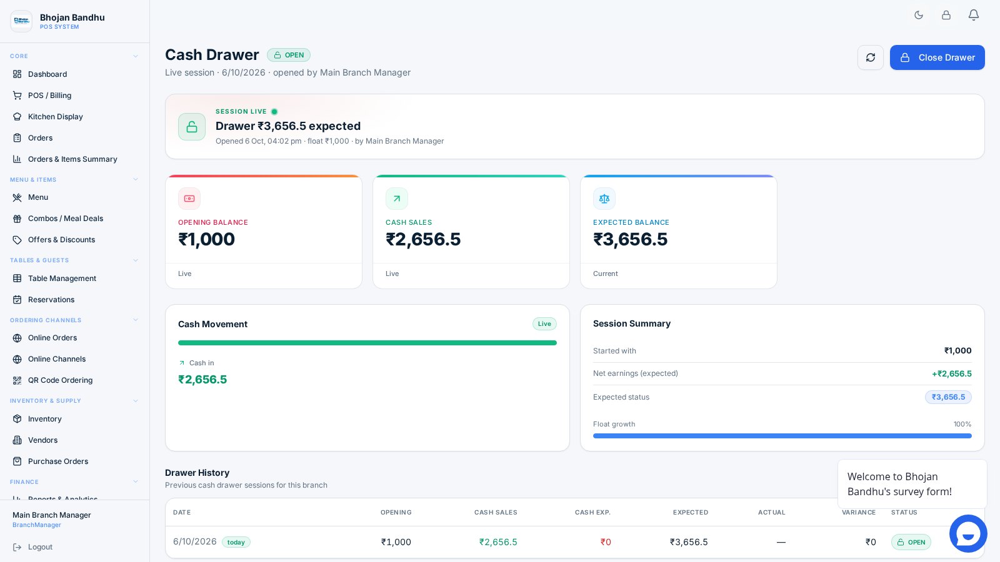
Figure 23 — Cash Drawer: open/close, session summary, expected vs counted cash and history.
15.2 Expenses
Navigation: FINANCE → Expenses
(permission finance.expenses /
finance.view).
Actions: Add Expense, Edit, delete, filter by category/method/date, Edit Expense Types, spending-by-category chart.
| Field | Required | Description | Example |
|---|---|---|---|
| Expense type | Yes | Electricity, Gas/LPG, Maintenance, Cleaning, Staff Welfare, Marketing, Transportation, Miscellaneous (default set) | Electricity |
| Amount | Yes | Value | 4500 |
| Date | Yes | Occurrence date | 07-10-2026 |
| Payment method | Yes | Cash / UPI / Bank… | Bank Transfer |
| Notes | No | Description | Oct bill |
| Branch | Yes | Outlet charged | FA-MAIN |
ℹ️ Note: Cash expenses paid from the open drawer reduce its expected balance.
15.3 Refunds and Voids
Navigation: FINANCE → Refunds / Voids
(permission finance.refunds; approval needs
finance.refunds.approve).
Creating a refund:
Step 1: Click New Refund Request (or cancel a paid order, which auto-creates one).
Step 2: Select an eligible order (status PENDING, PREPARING, READY, SERVED or COMPLETED).
Step 3: Choose FULL (must equal the grand total) or PARTIAL (greater than zero, not above the grand total) and enter the amount/reason.
Step 4: Submit. The refund gets a unique number
(REF-0001-…) and status REQUESTED.
Approval workflow:
| From | To | Who |
|---|---|---|
| REQUESTED | APPROVED or REJECTED | Approver (not the requester — self-approval is blocked) |
| APPROVED | SUCCESS or FAILED | Payment execution |
| REJECTED | REQUESTED | Re-open for review |
- Viewing scope: Super Admin sees all refunds; branch users see their branch; others see only refunds they processed.
- Delete allowed only while REQUESTED or REJECTED.
- Void details modal shows voided carts with reasons.
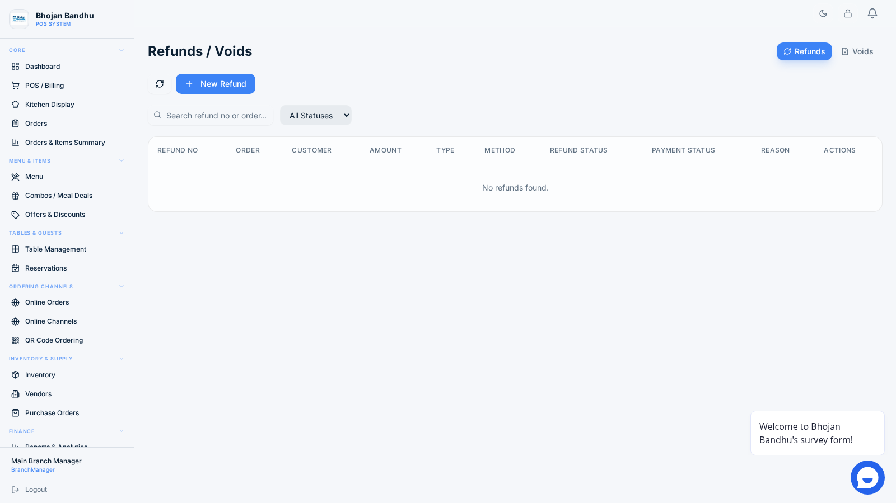
Figure 24 — Refunds / Voids: refund requests, status workflow and void details.
15.4 Tax & Compliance (GST)
Navigation:
FINANCE → Tax & Compliance (tabs:
Dashboard, Tax Rules,
Registrations).
Tax Rules tab:
| Field | Description |
|---|---|
| Tax type | GST / VAT / Service charge / Custom |
| Rate | Percentage |
| Apply on | All items / specific category / specific item |
| Inclusive | Price includes tax vs added on top |
| Scope | Franchise-wide or specific branch |
| Active | On/off |
Actions: create, edit, delete, view resolved rules (what actually applies per branch), calculate (preview a tax computation).
Dashboard tab (GST): GST status per branch, toggle
GST for a branch (branch-gst-toggle), fiscal-year view,
drill-down by period, collected vs payable.
Registrations tab: add GST registrations, set a default registration, edit/remove.
Compliance tab: compliance records (e.g. GSTR-1,
GSTR-3B) with statuses OPEN → DUE → FILED (or
LATE_FILED/WAIVED); create, edit, delete.
Payments tracker: record GST payments (add/delete), view the tracker.
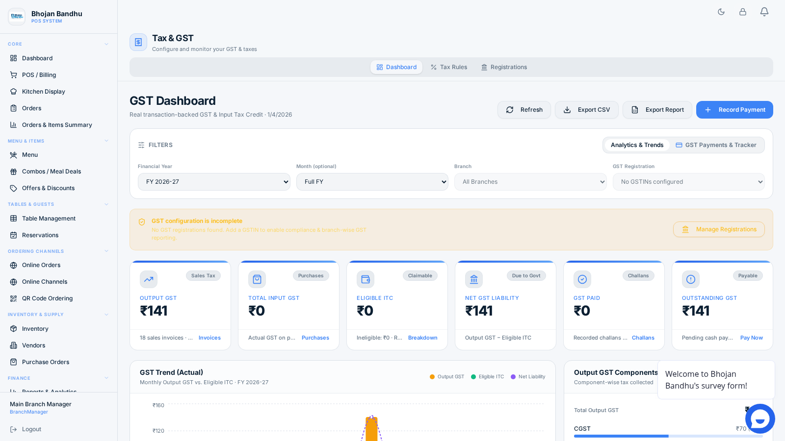
Figure 25 — Tax & Compliance: GST dashboard with tax rules and registrations tabs.
🔐 Security: Tax configuration is permission-gated (
tax.view/tax.manage). Franchise owners can manage tax only when the platform grants GST control to their franchise.
15.5 Franchise Payments
Navigation (owner): profit distribution per branch —
calculate a month, see gross profit, franchise fee, royalty, net profit.
Navigation (admin): franchise payments
list with view/create/edit (permission
franchise_payments.view/manage).
15.6 Channel settlements (Accountant)
Navigation: Channel Settlements
(Accountant) — payouts from Swiggy/Zomato: record, edit,
reconcile against order totals
(settlements/:id/reconcile).
16. Staff Management
16.1 Employees
Navigation: STAFF → Employees
(permission staff.view/create/update/delete).
Actions: Add Employee, Edit, Delete, open Employee Profile, filter by role/branch/status, stats cards.
| Field | Required | Description |
|---|---|---|
| Name | Yes | Full name |
| Username | Yes | Login identifier (unique) |
| Yes | Login + notifications (unique) | |
| Phone | No | Contact |
| Password | Yes (create) | Initial password (user should change it) |
| Role | Yes | One of the seven roles |
| Branch | Yes* | Outlet assignment (*franchise-level users may have none) |
| Status | Yes | ACTIVE / INACTIVE |
| App PIN | No | 4-digit PIN set via Set PIN |
Row/user actions: edit, change status, Reset Password, Set PIN, delete.
🚨 Important: Never create one shared login for “the counter”. Every human gets their own account so audit logs and refunds stay attributable.
16.2 Shifts
Navigation: STAFF → Shifts (permission
shifts.view / shifts.manage) — shows
Access Denied without permission.
- Default shifts: Morning 06:00–14:00, Afternoon 14:00–22:00, Night 22:00–06:00, Full Day 09:00–21:00.
- Actions: add/delete a shift (name, start, end, overnight flag), assign employees to shifts, unassign, view the roster.
16.3 Attendance
Navigation: STAFF → Attendance (also
Attendance & Shifts for
Cashier/Kitchen/Inventory/Accountant) — permission
attendance.view / attendance.manage.
Daily roll call:
Step 1: Open Attendance for today’s date/branch.
Step 2: Use Mark all present, or set each employee to Present / Late / Absent / Leave.
Step 3: Record check-in / check-out times and remarks as needed. Save.
History tab: filter past days with status filters; Adjust Attendance to correct a record.
Statuses: PRESENT, ABSENT, LATE, ON_LEAVE.
16.4 Attendance reports
Navigation: STAFF → Attendance Reports
(aliases: Attendance Reports, Reports → Attendance).
- Timesheet matrix and detailed logs.
- Filters: branch, employee, status, date range.
- Shows working hours; CSV export; legend; pagination.
17. Reports, Analytics and Data
17.1 Reports & Analytics
Navigation: Reports & Analytics
(permission reports.view).
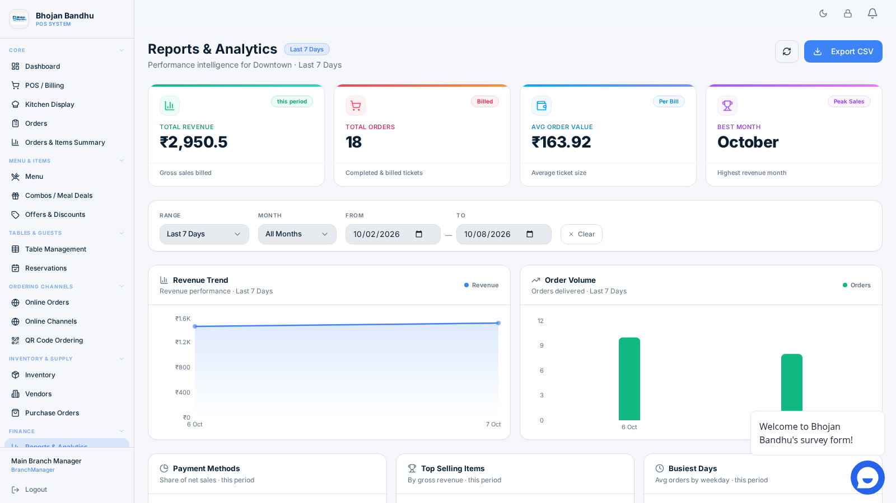
Figure 26 — Reports & Analytics with date/branch filters, revenue and order charts, payment mix and top items.
Filters: date range / month, branch.
Contents:
| Section | What it tells you |
|---|---|
| Revenue & Orders charts | Trend of revenue and order volume over the period |
| Key metrics | Total revenue, total orders, average order value, best month |
| Top branches | Branches ranked by revenue |
| Branch-wise revenue share | Proportional contribution per outlet |
| Payment methods | Cash/UPI/Card… mix |
| Top selling items | Best sellers by quantity/revenue |
| Busiest days | Which days of the week are busiest |
| Payment mix / order-type mix | How orders are paid and where they come from |
Export: CSV download from the reports page / Data Export (Section 17.4).
How to generate: set the range and branch → the charts and tables recalculate automatically → export if needed.
Interpretation: figures are aggregated for your scope (Super Admin = all; Franchise Owner = your branches; others = your branch) and respect the selected dates in IST.
17.2 Branch Comparison
Navigation: Branch Comparison —
side-by-side branch performance across months (revenue and orders
charts, performance radar, daily breakdown). Permission:
branch_comparison.view or reports.view.
17.3 Franchise Comparison
Navigation: Franchise Reports —
cross-franchise aggregates. Restricted to Super Admin /
Franchise Owner level accounts (role IDs 1–2). Others see
Super Admin Access Only.
17.4 Data Export
Navigation: Data Export (also reachable
at the /delivery URL, which currently renders the export
page).
Step 1: Choose an export type: Sales/Orders, Expenses, Inventory, Vendors, Vendor Payments, Staff, Reservations, Purchase Orders, GST.
Step 2: Set date range (from/to) and branch (branch choice is Super Admin only).
Step 3: Click export/download. A CSV is produced.
Permission: data_export.access or
reports.export.
⚠️ Warning: Exports contain business and customer data. Save them only to trusted locations and delete them when no longer needed.
17.5 Audit Logs
Navigation: SYSTEM → Audit Logs
(permission audit_logs.view).
- What is recorded: every create/update/delete action — module, user, IP address, browser/user-agent, status (SUCCESS/FAILED) and timestamp.
- Search/filter: free-text search, category, branch, status, date range.
- Details drawer: full payload of the action with a copy-as-JSON button.
- Export: CSV.
- Who can see it: Super Admin and Franchise Owner (permission-gated).
Use audit logs to answer “who changed this price/order/refund and when?”.
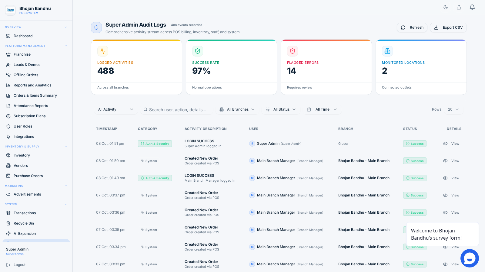
Figure 27 — Audit Logs with search, filters, status column and the details drawer.
18. Administration
18.1 Users
Navigation: Users (permission
staff.view / users.manage — Super Admin,
Franchise Owner).
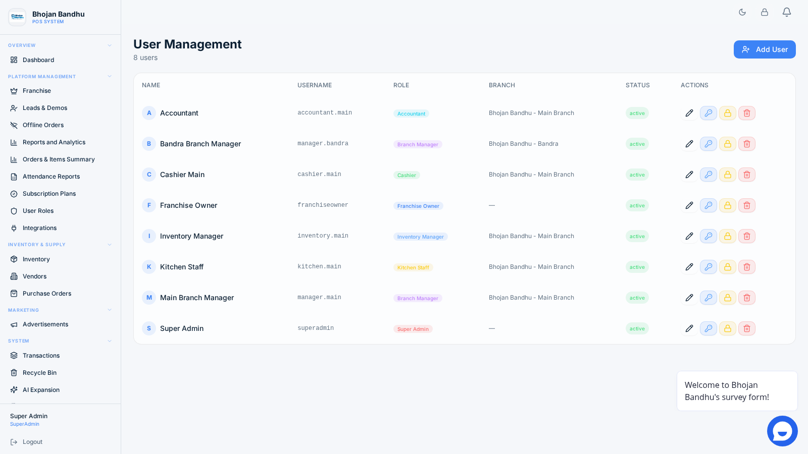
Figure 28 — User management: account list with role/branch, status controls, Reset Password and Set PIN actions.
Actions: Add User, Edit, Delete, change status, Reset Password, Set PIN (4-digit), open profile.
Steps — create a user:
Step 1: Click Add User.
Step 2: Enter name, username, email, phone, initial password, role, branch and status.
Step 3: Save. The person can now log in (Section 3.2).
Steps — reset a password:
Step 1: Find the user → Reset Password.
Step 2: Enter the new password → confirm. The user logs in with it next time.
Field validation notes: username and email must be unique; role is mandatory; branch is mandatory for branch-scoped roles (a user with no branch cannot perform branch-scoped operations).
18.2 Branches
Navigation: Multi Branch (Franchise
Owner) / Franchise → branches (Super Admin). Permission
branches.view/create/update/delete.
Actions: Add/Edit/Delete branch, bulk upload branches, assign/remove a manager, view per-branch stats (orders, revenue, tables), Transfer Menu, Transfers, Transfer Franchise (move a branch to another owner — Super Admin), Transfer History.
Key branch fields: name, code (unique — used by offline mode and QR), franchise name, city/location, phone, email, address, GST number, GST enabled flag, table count, status, offline orders enabled + offline threshold hours, manager.
⚠️ Warning: Deleting a branch is a destructive action (it moves to the Recycle Bin). Do not delete a branch that still has open orders or historical reports you need.
18.3 Franchise management (Tenants)
Navigation:
PLATFORM MANAGEMENT → Franchise (Super Admin only).
Permission tenants.view/create/update/delete.
Actions: list with status filters (Active/Inactive/Suspended/Deleted), Add/Edit/Delete franchise (business profile, subscription plan, owner credentials), manage that franchise’s branches, transfer menu, bulk upload (download template → preview import → confirm import), GST control grant/revoke, branding control grant/revoke.
Feature switches per franchise:
| Switch | Effect |
|---|---|
| GST control allowed | The franchise owner may manage tax rules |
| Branding control allowed | The owner may change branding |
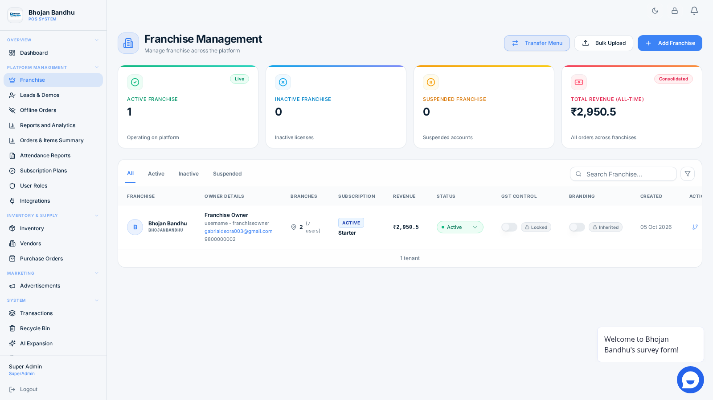
Figure 29 — Franchise management: tenant list with status filters and per-franchise actions.
18.4 Leads & Demos
Navigation:
PLATFORM MANAGEMENT → Leads & Demos — a small CRM for
inbound demo requests.
- Pipeline statuses: NEW → CONTACTED → DEMO_SCHEDULED → CONVERTED / LOST.
- Actions: Add Lead, edit, delete, filter, export, WhatsApp/email actions.
- Leads arrive from the public demo-booking form.
18.5 Subscriptions, Plans and Transactions
| Page | Navigation | Purpose |
|---|---|---|
| Subscription Plans | PLATFORM MANAGEMENT → Subscription Plans |
Create/edit plan catalog: price, billing cycle (Monthly/Quarterly/Yearly), max branches, max users, features. Archive/delete |
| Subscriptions | Subscriptions (owner) |
Your plan, status, upgrade, billing/invoice history with View E-Receipt / PDF |
| Transactions | PLATFORM MANAGEMENT → Transactions |
All franchise subscription payments with status/search and per-row invoice download |
Statuses: subscription
ACTIVE / EXPIRED / CANCELLED / TRIAL / SUSPENDED; payment
PENDING / PAID / FAILED / REFUNDED.
Plan limits are enforced: you cannot exceed the plan’s maximum branches/users.
Upgrade flow: choose plan → create payment order → pay (Razorpay/Stripe) → payment verified → new plan active.
18.6 Receipt Settings
Navigation:
ADMINISTRATION → Receipt Settings (permission
receipt_settings.manage) — per branch.
| Setting | Purpose |
|---|---|
| Header / footer text | Printed top/bottom of the bill |
| Logo | Image printed on receipts |
| QR code toggle | Prints order-tracking QR |
| GST number / GST enabled | GSTIN printed + tax display |
| FSSAI number | Food-safety licence number printed |
| Paper size | 58 mm or 80 mm |
| Display toggles | Show/hide QR, server name, and other fields |
| Live preview | See the receipt as you edit |
Changes affect the next printed receipt — no restart needed.
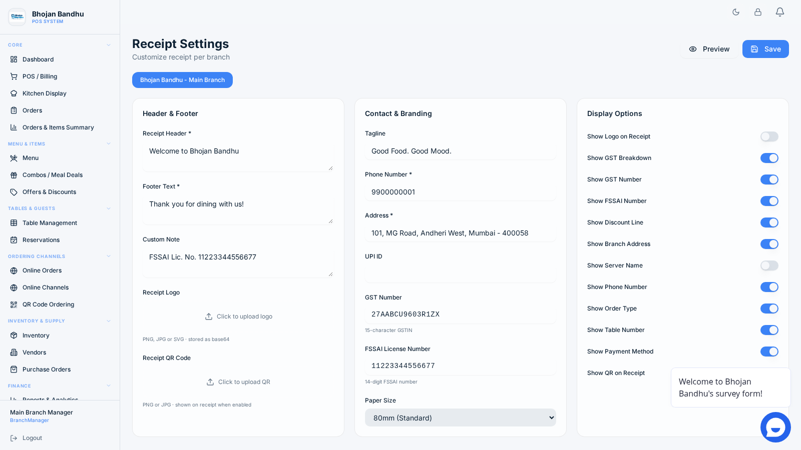
Figure 30 — Receipt Settings with live preview: header, logo, GST/FSSAI, paper size and display toggles.
18.7 Settings
Navigation: Settings (permission-gated;
some tabs restricted).
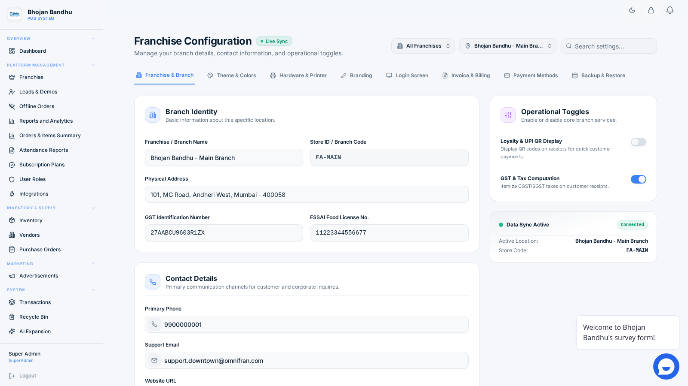
Figure 31 — Settings with its eight tabs (Franchise & Branch, Theme & Colors, Hardware & Printer, Branding, Login Screen, Invoice & Billing, Payment Methods, Backup & Restore).
| Tab | Contains | Who can change |
|---|---|---|
| Franchise & Branch | Branch identity, contact channels, operational toggles | Owner/Manager |
| Theme & Colors | Light/dark mode, accent palette (Ocean Blue, Churi Crimson, Emerald, Purple, Orange, Red, Teal, custom) | Owner/Manager |
| Hardware & Printer | Thermal printer, network IP, barcode scanner configuration | Owner/Manager |
| Branding | Brand logos, favicon, receipt headers | Owner/Manager (or read-only if branding is platform-managed) |
| Login Screen | Hero content on the login page’s left panel (heading, subtitle, feature pills) | Owner/Manager |
| Invoice & Billing | Company identity, GST details, terms printed on subscription invoices | Super Admin only |
| Payment Methods | Payment methods and tender options shown on the billing terminal | Owner/Manager |
| Backup & Restore | Database snapshots and restoration (also has its own page) | Owner/Manager with backup permission |
⚠️ Warning — dangerous settings: - Backup & Restore (restore) overwrites current data with a snapshot. Always take a fresh snapshot first and only restore during a planned maintenance window. - Disabling GST on a branch stops GST being charged — fix only if you are certain. - Changing payment methods hides tenders from cashiers immediately.
18.8 Advertisements and Ad Creative Builder
Navigation: MARKETING → Advertisements;
Ad Creative Builder at /ad-builder (direct URL).
- Advertisements: upload posters, set placement, priority and target branch; edit/toggle/delete; preview; sample templates. Visible in the header ad strip and POS promotions.
- Ad Creative Builder: design promotional graphics from menu items — pick a template, adjust the color palette, upload the brand logo, edit text, download SVG.
18.9 Recycle Bin
Navigation: SYSTEM → Recycle Bin
(permission recycle_bin.access).
What it is: a safety net. Deleted records from supported modules (menu items, branches, inventory, vendors, reservations, customers, expenses, orders, tables, categories, attendance, purchase orders, refunds, advertisements, combos, offers, franchises, users, tax rules…) are parked here before they are gone forever.
Actions:
| Action | Effect |
|---|---|
| Restore | Brings the record back to active status |
| Delete Forever | Irreversible permanent deletion |
Filters: module, date, deleted-by.
🚨 Important: Delete Forever cannot be undone. Restore instead whenever there is any doubt.
18.10 Backup & Recovery
Navigation:
SYSTEM → Backup & Recovery (permissions
backup.view/create/download/delete/restore).
Actions:
- Take Snapshot — create a backup now (types: FULL, DATA-ONLY, ASSETS-ONLY; scope: SYSTEM / ORGANIZATION / BRANCH).
- Snapshot archive table — list with scope filters, status (PENDING → PROCESSING → COMPLETED / FAILED), pagination.
- Download a snapshot, Delete a snapshot.
- Schedule — automatic backups with a configurable timer.
- Restore — preview a restore first, then execute; you can also upload a backup file (preview → execute).
Scope rules: System scope = Super Admin; Organization = Super Admin/Franchise Owner; Branch = all roles with permission.
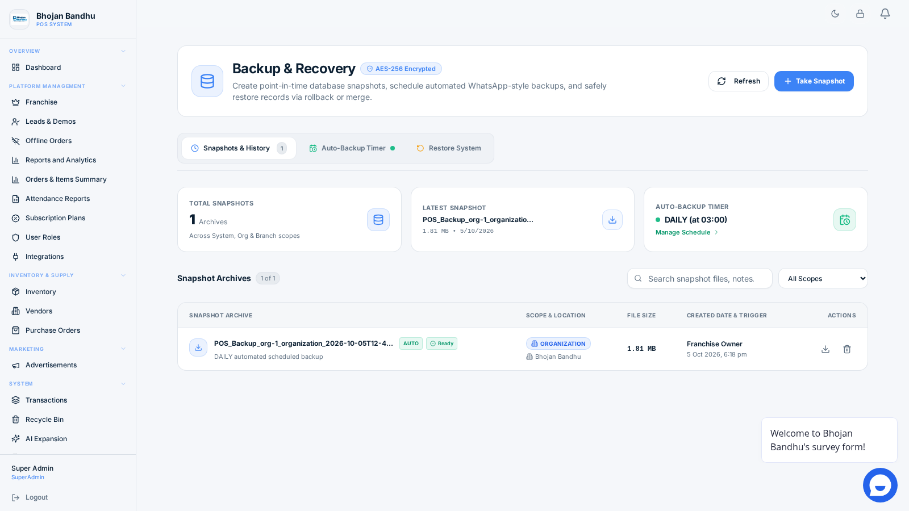
Figure 32 — Backup & Recovery: take a snapshot, schedule backups, download and restore.
⚠️ Warning: Restoring replaces current data. Take a fresh snapshot before restoring, and never restore a foreign backup into a live system.
18.11 Integrations
Navigation:
PLATFORM MANAGEMENT → Integrations (Super Admin only).
Status cards: Live, Configured, Needs Setup, Inactive — covering payment gateway (Razorpay/Stripe), notification/printer, email (SMTP), online channels and Meta WhatsApp.
Steps — configure an integration:
Step 1: Open Integrations and choose the integration.
Step 2: Enter credentials/config fields (placeholders only in docs —
never share real keys: YOUR_API_KEY,
YOUR_SECRET, YOUR_WEBHOOK_URL).
Step 3: Click Test — SMTP settings run a real connection test; others call a test URL.
Step 4: Save. The card turns Live/Configured.
Enable/disable: edit the integration or disconnect it from the relevant page (channel accounts have Connect / Disconnect / Test / Rotate credentials).
🔐 Security: API keys, SMTP passwords, webhook secrets and WhatsApp tokens are stored encrypted. Never paste them into chat, email, screenshots or tickets.
18.12 WhatsApp Notifications console
Navigation: WhatsApp Notifications
(Super Admin only — others see Super Admin Access
Required).
Tabs: Config (Meta WhatsApp Business: WABA ID, phone number ID, API version, tokens), Branches (per-branch toggles/overrides), Inbound (messages received), Logs (sent message status), plus a test message dispatch.
Automatic order messages (templates, UTILITY,
English): order confirmed, preparing, ready, completed, cancelled — sent
as an outbox message
(QUEUED → PROCESSING → SENT → DELIVERED/READ, or
FAILED with automatic retries).
Per-event toggles: notify on created / preparing / ready / completed / cancelled. Branches can override the global setting.
18.13 Offline Reconciliation
Navigation: Offline Orders /
Offline Orders → Offline Reconciliation (permission-gated;
Super Admin, Franchise Owner, Managers).
- Sync Queue tab: orders captured on terminals while offline (local pending queue).
- Server sessions list: outage windows with duration, order count, gross total.
- Session detail modal: the orders inside a window.
- Actions: trigger sync, view heartbeat status of terminals.
Full offline story in Section 20.
18.14 AI Expansion
Navigation: SYSTEM → AI Expansion —
market intelligence for franchise growth.
Step 1: Configure target city and preferences.
Step 2: Run the market analysis.
Step 3: Review the opportunity score, competitor list, verdict and ranked opportunities.
ℹ️ Note: Results depend on the data sources configured for your installation; treat them as advisory input, not a guarantee.
18.15 Help Center
Navigation: Help & Support /
Help Center — searchable FAQ categories, contact options
(WhatsApp, phone, email) and a support ticket form.
19. Printing (Churi Print Service)
19.1 How printing works
Printing uses a three-tier fallback — the first available tier wins:
| Tier | Mechanism | Requirements | Result |
|---|---|---|---|
| 1 | Churi Print Service (local helper app) | Service installed & running on the billing PC | Silent print — no browser dialog |
| 2 | QZ Tray | QZ Tray + Java installed; printer name saved in the app settings
(churi_printer_name) |
Silent print |
| 3 | Browser print (window.open +
print) |
Nothing extra | A print dialog opens — choose the printer and click Print |
What gets printed:
- KOT (Kitchen Order Ticket): 80 mm, order number, order-type badge (DINE-IN / TAKEAWAY / SWIGGY / ZOMATO), table, time, notes, item names with quantities (vegetarian marks, no prices).
- Receipt: brand header/footer, GSTIN, FSSAI, CGST/SGST split, discount, payment method, order type/table, optional QR/UPI code, logo, branch address/phone — all controlled by Receipt Settings (Section 18.6).
19.2 Installing the print service
Step 1: Download the installer from your administrator (the Windows
setup is also published under the dashboard’s downloads
folder).
Step 2: Run the installer (it allows choosing the install folder and adds a Start-menu shortcut).
Step 3: Launch Churi Print Service. It minimises to the system tray (icon near the clock) and starts a local service on port 7676 (bound to this computer only).
Step 4: By default the service starts automatically with your computer (change this in its settings).
Requirements: Windows 10/11 (also buildable for macOS/Linux); the thermal printer must already be installed in Windows.
19.3 Choosing printers
Step 1: Right-click the tray icon → open Settings.
Step 2: Pick the Receipt Printer from the list of OS printers (leave empty to use the system default printer).
Step 3: Pick the KOT Printer (leave empty = same as the receipt printer).
Step 4: Optionally untick auto-start.
Step 5: Click Save.
[SCREENSHOT REQUIRED — Churi Print Service settings window]
19.4 Test printing
In the service settings, click Test Receipt and Test KOT (and Refresh printers if your printer was installed after the service started).
From the POS: use the direct print action in the KOT preview, or complete a Pay & Print on a test order.
Verification checklist: - ☐ Printer feeds paper and prints crisp 80 mm content - ☐ Receipt shows correct brand, GST number and totals - ☐ KOT shows items and quantities without prices - ☐ VAT/GST split matches the bill
19.5 Receipt layout settings
See Section 18.6 (Receipt Settings) — header, footer, logo, QR, GST/FSSAI, paper size 58/80 mm, display toggles, live preview.
20. Offline Operations
The system is designed to keep billing during internet outages.
During an outage:
- The POS continues to work from cached menu/inventory data.
- Orders are stored locally on that terminal with a unique offline ID.
- Held bills remain local (Section 7.10).
When connectivity returns:
- Queued orders sync automatically
(
Offline Sessions → Sync). - The backend re-agrees the outage window (about a 60-minute grace) and deduplicates by offline ID — a repeated submission returns the original order instead of creating a duplicate.
- Terminals send periodic heartbeats so you can see which are online.
Monitoring: Offline Orders page shows
the sync queue, server sessions (duration, order count, gross total) and
session details.
Branch configuration: each branch has offline orders enabled and an offline threshold hours setting; offline mode reads branch configuration from the public branch-config endpoint.
⚠️ Warning: Do not clear browser storage while offline orders are pending. Reconcile the queue the same day so revenue and stock stay accurate.
21. Notifications
In-app notifications (bell icon)
| Trigger | Content |
|---|---|
| Low / critical / out-of-stock | Item name, quantity on hand, threshold, unit, alert type |
| Integration order failure | Order could not be ingested from a channel |
| Order events | New online orders pushed in real time (sound/toast on POS) |
| Table updates | Table status changes pushed to floor screens |
Actions in the bell panel: mark one as read, mark all read, clear all, delete one. Notifications are scoped: Super Admin sees all, owners see their franchise, staff see their branch.
Email notifications
Sent through SMTP (configured in Integrations or server settings): OTP emails, welcome/onboarding emails, low-stock alerts to recipients, demo-booking emails, and invoice PDFs emailed to tenants on payment.
WhatsApp notifications
Automatic order-status messages using approved templates (Section 18.12). Status of each message is visible in the WhatsApp Logs tab.
Toast messages (top-right)
| Colour | Meaning |
|---|---|
| Green | Action succeeded (“Bill held (#…)”, “Saved”) |
| Blue/neutral | Informational |
| Red | Action failed — read the message; it states the reason |
ℹ️ Note: The system does not send SMS. Customer messaging happens over WhatsApp (where configured).
22. Error Reference
Invalid credentials
/ login refused
Meaning: Wrong email/username or password; or the account is inactive/deleted; or the franchise is suspended. Solution: Check the identifier (username or email works). Wait if you recently failed 5 times (15-minute cool-down). Ask your administrator to Reset Password. If it continues: provide your username, approximate time and the exact message to support.
429 Too Many Requests
(retry after X seconds)
Meaning: Login rate limit — 5 failed attempts per account or 100 per network address within 15 minutes. Solution: Wait for the shown retry time; use the correct password; avoid repeated attempts from shared computers.
Access Denied / Forbidden
on a page
Meaning: Your role lacks the permission for that path, or you are acting on another branch’s data. Solution: Return to the dashboard and use the sidebar items shown for your role. If you need the page, ask an administrator to enable the permission in User Roles.
Franchise Inactive (Read-Only Mode)
banner / BILLING SUSPENDED /
OPERATIONS SUSPENDED
Meaning: The franchise is inactive (subscription/licence issue). Viewing is allowed, changes are blocked. Solution: Franchise owner should open Subscriptions and renew/reactivate. Branch staff should contact the owner.
Session expired
Meaning: The login token expired (sessions last 1 day) or you logged out elsewhere. Solution: Log in again. Check the last order in Orders before re-billing.
Coupon/offer not applied
Meaning: Code is inactive, expired, usage limit reached, below the minimum order amount, not valid for this branch, or the percentage is capped by max discount. Solution: Verify the offer in Offers & Discounts; bill without the coupon if invalid.
Order total cannot be less than amount already paid
Meaning: You tried to reduce an order below its captured payment. Solution: Keep the payment as credit, or cancel the order and issue a refund (Sections 8.4, 15.3).
Refund rejected:
Self-approval not allowed
Meaning: The person who created a refund cannot approve it. Solution: Another authorised user (manager/accountant) approves it.
Payment gateway not configured
Meaning: No active Razorpay/Stripe configuration (needed for subscription payments and guest online payments). Solution: Super Admin configures the payment integration (Section 18.11) and tests it.
Stock deduction did not happen
Meaning: The item has no recipe configured, or stock was already deducted (each order deducts only once), or stock is at zero. Solution: Add recipe ingredients to the menu item; check the item’s History for existing movements.
Duplicate/missing offline orders
Meaning: Orders taken during an outage are still in the local queue, or a sync is in progress. Solution: Open Offline Orders and trigger sync; each offline order’s unique ID guarantees it is created exactly once.
404 — Page Not Found
Meaning: The address is wrong, or you followed a link to a page that does not exist in this build (see Section 32). Solution: Use the sidebar navigation instead of editing URLs.
Print dialog appears / nothing prints
See Section 19.6.
INTEGRATION ORDER FAILED
notification
Meaning: An incoming channel order could not be
processed (credentials, mapping or provider outage).
Solution: Check
Online Channels → Monitor/Logs, fix mapping/credentials,
then re-enter the order manually from Online Orders → New Online
Order so the customer is served.
23. Troubleshooting
| Problem | Possible cause | Solution |
|---|---|---|
| Cannot log in | Wrong credentials | Re-check username/email and password; retry after the lock-out window |
| Cannot log in | Account inactive / franchise suspended | Administrator reactivates the account/franchise |
| Page not loading | Network issue | Check internet; the POS can still bill offline (Section 20) |
| “Access Denied” on a page | Missing permission | Use sidebar-visible pages; ask admin to grant permission in User Roles |
| Data not visible on a list | Filters/date range too narrow | Clear/reset filters; widen the date range |
| Menu items missing on POS | Item marked unavailable/inactive, or wrong category | Enable the item in Menu; check category tab |
| Wrong tax on bill | GST disabled on branch or rule not active | Check Tax Rules and the branch GST toggle |
| Coupon not working | Invalid/expired/limit reached | Check the offer’s dates, usage count and branch list |
| Order not on kitchen screen | KOT not sent (used Save only) | Re-send from the order (KOT actions) or call the kitchen |
| No sound on new orders | Device muted / browser notification blocked | Unmute; allow notifications; test with a new order |
| Receipt prints blank/wrong | Printer default or paper mismatch | Configure Receipt/KOT printer in the print service; test print |
| Payment failed | Gateway outage or misconfiguration | Check the integration status; record as Due and settle later |
| Cash drawer variance | Missed refund/expense or miscount | Review the drawer history and refunds for the session |
| Stock looks wrong | Deduction missing/never configured | Check item recipes and movement history; adjust stock |
| Notifications not arriving | SMTP not configured | Super Admin: Integrations → Email → Test → fix credentials |
| WhatsApp messages not sending | Template/token issue | Super Admin: WhatsApp console → Config/Logs; send a test message |
| Terminal shows offline banner | Internet down | Keep billing; reconcile at Offline Orders after reconnect |
| Session keeps expiring | 1-day token expiry | Log in again; keep Remember me on private devices |
| App feels stuck after restore | Restore in progress | Wait for the backup status to reach COMPLETED; refresh |
| Browser data cleared → carts gone | Held bills are device-local | Held bills cannot be recovered — recreate the order |
| Two terminals, different menus | Menus scoped per branch | Use Transfer Menu to sync menus between branches |
24. Security Best Practices
🔐 Passwords - Use a long, unique password per person. Never share it. - Default/demo passwords shipped with seed data must be changed on first login — treat them as public. - Never write passwords on the counter, on receipts, or in group chats.
🔐 Accounts are personal - Never share one login between cashiers — refunds, voids and audit entries must be attributable. - Deactivate a user immediately when they leave (Users → status = INACTIVE).
🔐 Sessions - Lock the app (Ctrl/⌘ + L) when you step away; log out fully at shift end. - Avoid Remember me on public/shared computers.
🔐 Permissions - Grant the least permission that lets someone do their job (edit switches in User Roles). - Do not hand Super Admin credentials to operators.
🔐 Sensitive data - API keys, SMTP passwords, WhatsApp tokens and gateway secrets live encrypted in the system — never copy them into tickets, emails or screenshots. - Customer phone numbers are personal data — use exports and bulk messaging responsibly.
🔐 Payments - Never ask a customer to share card details/OTP. - Reconcile the cash drawer daily; investigate variances promptly.
🔐 Admin operations - Take a snapshot before restores, bulk imports, tax changes or menu bulk uploads. - Review Audit Logs regularly for unexpected changes.
🔐 Suspicious activity - Unexpected login prompts, strange orders, or unknown users in Audit Logs → change passwords, disable the account, and contact support (Section 28).
25. Data Management (Export, Backup, Restore, Recycle Bin)
| Operation | Where | Notes |
|---|---|---|
| Export CSV/Excel | Data Export, Reports (Download Excel), Attendance Reports (CSV), Audit Logs (Export CSV) | Scope filters apply; contains sensitive data |
| Bulk import | Menu (Bulk Upload), Branches (bulk upload), Franchises (template → preview → confirm) | Always use the downloaded template |
| Backup snapshot | Backup & Recovery → Take Snapshot | FULL / DATA-ONLY / ASSETS-ONLY; scopes System/Organization/Branch |
| Scheduled backup | Backup & Recovery schedule settings | Automatic snapshots on a timer |
| Download backup | Backup & Recovery → Download | Keep copies off-server in a secure place |
| Restore | Backup & Recovery → preview → execute (or upload a file) | Overwrites data — dangerous |
| Delete a record | Row delete → Recycle Bin | Restorable |
| Delete forever | Recycle Bin → Delete Forever | Irreversible |
| Data retention | Backups expire automatically after their retention period; expired backups are cleaned up | Old snapshots disappear from the list |
⚠️ Warning — destructive operations: Delete Forever, Restore, franchise/branch deletion and bulk imports can permanently change or destroy data. Snapshot first, operate in a quiet window, and verify afterwards.
26. Frequently Asked Questions
How do I reset my password? Ask your administrator — Users → Reset Password (Section 18.1). The login screen’s Forgot password? link explains this.
How does a manager create a new user?
Users → Add User → fill name, username, email, password,
role, branch → Save (Section 18.1).
Why can’t I see a feature? Your role does not have that permission. Menus are hidden automatically. An administrator can enable it in User Roles.
How do I export data? Use Data Export (choose type + date range) or the export buttons on Reports/Attendance/Audit pages.
What happens if my internet fails? Billing continues; orders queue locally on that terminal and sync automatically when back online. Reconcile at Offline Orders.
How do I cancel an operation/order? Orders → open the order → Cancel with a reason. If it was paid, a refund request is created automatically. To discard an unsent cart, use Void Cart with a reason.
How do I start/end a shift with cash? Open the drawer with an opening balance (Cash Drawer or POS Open Drawer); close it with the counted amount to see the variance.
How do I print a duplicate receipt? Open the order and use its receipt/view action (pos.access permission), then print.
How do I add a discount? Type a coupon code (Offers) at billing, or use the discount field. The server validates it.
How do I seat a reservation? Reservations → find the booking → Seat Guest.
How do I move an order to another table? Table Management → Move KOT / Transfer Table.
How do I contact support? WhatsApp/phone +91 8699524005 (linked from the login screen, POS and Help Center), or the Help Center ticket form (Section 28).
Can I use the POS on a tablet/phone? The layout adapts to smaller screens, but a desktop/laptop is recommended for busy counters.
Where are held bills stored? Locally in that browser/device only (Section 7.10).
How do I know who changed a price? Check Audit Logs (search by module/date).
How do I stop an inactive franchise from billing? It is automatic: inactive franchises show BILLING SUSPENDED; suspend/reactivate from the Franchise page (Super Admin).
27. Glossary
| Term | Definition |
|---|---|
| POS | Point of Sale — the billing terminal |
| KOT | Kitchen Order Ticket — the slip the kitchen works from |
| KDS | Kitchen Display System — the kitchen’s screen |
| Tenant / Franchise | One franchise organisation owning one or more branches (stores) |
| Branch / Outlet | A single restaurant location |
| Super Admin | Operator of the whole platform |
| Role | A named set of permissions (7 roles) |
| Permission | A single on/off capability (e.g. orders.cancel) |
| SKU | Stock Keeping Unit — unique inventory code |
| Recipe | Menu item → inventory ingredient mapping used for stock deduction |
| Combo | A bundle of menu items sold as one product |
| Offer/Coupon | A discount code validated server-side at billing |
| AOV | Average Order Value |
| GST | Goods and Services Tax (India) |
| ITC | Input Tax Credit — tax paid on purchases that offsets output tax |
| GSTR-1 / GSTR-3B | GST return forms |
| FSSAI | Food Safety and Standards Authority of India (licence number printed on bills) |
| Drawer / Till | The cash drawer session with opening/closing counts |
| Variance | Difference between expected and counted cash |
| Void | Discarding a cart/bill before completion, with a reason |
| Refund | Returning money for a paid order (full or partial) |
| PO | Purchase Order — an order placed with a vendor |
| Reorder level | Stock level at which a low-stock alert fires |
| QR Ordering | Guest self-ordering by scanning a table QR code |
| Channel | An online ordering platform (Swiggy, Zomato, Website, WhatsApp, QR) |
| Settlement | Payout from a delivery platform for completed orders |
| Webhook | A server-to-server callback used by integrations |
| Aggregator | A delivery marketplace such as Swiggy/Zomato |
| Offline session | A window of time the terminal billed without internet |
| Sync | Sending locally queued offline orders to the server |
| Recycle Bin | Holding area for deleted records (restorable) |
| Audit log | Record of who changed what, when, from where |
| PWA | Progressive Web App — installable web app (Install button) |
| JWT / session token | The login token that expires after 1 day |
| SMTP | The email-sending protocol used for notifications |
28. Support
| Channel | Details |
|---|---|
| Phone | +91 8699524005 (shown on the login screen, POS header and Help Center) |
| https://wa.me/8699524005 | |
[Support Email] — the Help Center links
support@yourpos.com; confirm your deployment’s official
address |
|
| Support portal | In-app Help Center → submit a support ticket |
| Business hours | [Support Business Hours] |
ℹ️ Note: Contact details above are exactly as they appear inside the application. Fill in any placeholder marked
[...]with your organisation’s confirmed details before distributing this manual.
When reporting an issue, include:
- Your username and role
- Branch and franchise name
- Date/time of the problem (with time zone)
- The exact error message (screenshot)
- The page/URL and the steps you performed
- Order number(s) involved, if any
- Whether it happened during an internet outage
- Device and browser used
- Whether a print was involved (and which printer)
Never send passwords, OTPs, API keys or customer payment details to support.
29. Quick Reference Guides
BILL A DINE-IN ORDER
POS → Dine-in → select table → tap items → (coupon) → Pay & Print (F10)
→ choose tender → confirm → receipt prints, table released
SEND TO KITCHEN ONLY
POS → add items → KOT Only (or KOT & Print)
HOLD / RESUME A BILL
POS → Hold (F8) → later → Resume dialog → Resume
VOID A CART
POS → Void Cart → enter reason → confirm
OPEN / CLOSE CASH DRAWER
POS → Open Drawer (enter float) … Close Drawer (count cash → variance)
VIEW LIVE ORDERS
Sidebar → CORE → Orders → filter by status/channel
WORK A KITCHEN TICKET
CORE → Kitchen Display → Accept → Start cooking (confirms stock deduction)
→ Mark ready → Ready & serve
ADD A MENU ITEM
MENU & ITEMS → Menu → Add Item → fill fields → Save
BULK-UPLOAD MENU
MENU & ITEMS → Menu → Bulk Upload → download template → fill → upload
CREATE AN OFFER
MENU & ITEMS → Offers & Discounts → New → code/discount/validity/branches → Save
CREATE A PURCHASE ORDER
INVENTORY & SUPPLY → Purchase Orders → New PO → vendor + items → Save
→ (on delivery) Receive → Record Payment
ADJUST STOCK
INVENTORY & SUPPLY → Inventory → Adjust stock → type + qty + reason → Save
REFUND A PAID ORDER
FINANCE → Refunds / Voids → New Refund → pick order → FULL/PARTIAL → Submit
→ (approver) Approve → SUCCESS
DAY-END RECONCILIATION
Cash Drawer → Close (count) → check variance
→ Reports & Analytics (today) → Backup snapshot
ADD A USER
Users → Add User → name/username/email/password/role/branch → Save
RESET A USER'S PASSWORD
Users → row → Reset Password → new password → confirm
CHANGE A ROLE'S PERMISSIONS
PLATFORM MANAGEMENT → User Roles → role → toggle switches → Save
CUSTOMIZE THE RECEIPT
ADMINISTRATION → Receipt Settings → branch → header/footer/logo/GST/paper → Save
PRINT TEST
Churi Print Service (tray icon) → Settings → pick printers → Test Receipt / Test KOT
EXPORT DATA
Data Export → choose type → date range (+ branch) → Download
RECOVER A DELETED RECORD
SYSTEM → Recycle Bin → find record → Restore
TAKE A BACKUP
SYSTEM → Backup & Recovery → Take Snapshot → wait for COMPLETED
GO OFFLINE / COME BACK ONLINE
Keep billing → after reconnect → Offline Orders → Sync queue → verify30. Role-Specific Guides
30.1 Super Admin guide
| Area | Do this |
|---|---|
| Platform health | Dashboard → franchises, MRR, leads |
| Franchises | PLATFORM MANAGEMENT → Franchise — create, edit,
statuses, GST/branding controls |
| Plans & billing | Subscription Plans, Transactions (invoices) |
| Access control | User Roles (permission switches), Users |
| Integrations | Integrations (payments, SMTP, WhatsApp), WhatsApp Notifications console, Online Channels credentials |
| Oversight | Audit Logs, Recycle Bin, Backup & Recovery, Offline Orders |
| Growth | Leads & Demos, AI Expansion |
| Settings | Settings (incl. Invoice & Billing tab), Company profile |
30.2 Franchise Owner guide
Dashboard → branch performance → Menu/Combos/Offers → Online Channels → Inventory/Vendors/POs → Multi Branch → Reports → Tax & Compliance → Subscriptions → Audit Logs → Backup → Settings.
30.3 Branch Manager guide
OPENING Dashboard → check tables/reservations → Cash Drawer (open float)
SERVICE POS billing · Kitchen Display · Orders · Online Orders
MID-DAY Menu availability · Inventory low stock · Vendors/POs
STAFF Employees · Attendance · Shifts
CLOSING Cash Drawer (close & count) · Refunds check · Reports (today)
WEEKLY Purchase orders · Receipt settings · Expenses review30.4 Cashier guide
LOGIN (own credentials — never shared)
START SHIFT POS → Open Drawer → enter float
BILL POS → items → KOT (kitchen) → on payment: Pay & Print (F10)
tender: Cash / UPI / Card / Due · Split Payment if needed
PROBLEMS Void Cart (with reason) · resume held bills · online orders
REFUNDS FINANCE → Refunds / Voids → New Refund Request
END SHIFT Close Drawer → count → note variance → Logout
ALSO Orders (view own) · Attendance (mark self) · Tax view30.5 Kitchen Staff guide
LOGIN → CORE → Kitchen Display
Accept ticket → Start cooking (confirm ingredient deduction)
→ Mark ready → Ready & serve
Check Orders list for context · Menu (view) · Attendance30.6 Inventory Manager guide
Dashboard (low stock/POs) → Inventory (add/adjust/history/bulk)
→ Vendors (add/pay) → Purchase Orders (create/receive/pay)
→ Transfers between branches → Attendance30.7 Accountant guide
Dashboard (revenue, GST, refunds) → Reports & Analytics → Orders & Items Summary
→ Expenses → Cash Drawer → Tax & Compliance (GST, filings, payments)
→ Refunds / Voids (approve) → Channel Settlements → Attendance Reports → Data Export31. First-Day Checklist
New user (any role):
New administrator (first installation):
End of manual. Documentation version 1.0 — October 2026. Report gaps or corrections to [Support Email].